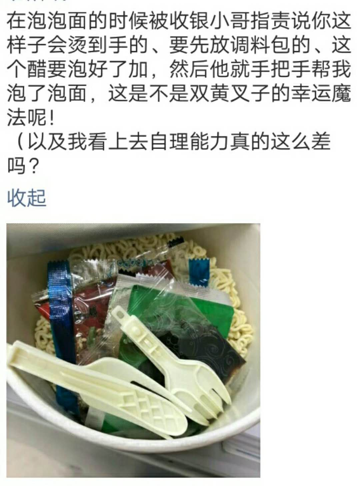

微博
免责声明：此微博的内容均为彭祖良所写，与彭良祖无关。
- 2019/10/16：
- 这个链接收一些较长篇幅的文章。
2021
- 01.28
- 对郑爽这件事情我当然没什么要说的，因为我不是他老公，不太清楚事情的来龙去脉。我想说的东西如下。经常写学术文章的朋友会感受到，描述别人的工作有两种方式，一种是夸赞，一种是批判，而且往往两种都对。道理很简单，任何事情都有好的方面和坏的方面。所以写文章的人或者是发布信息的人考虑的是他想让人们看到好的方面还是坏的方面，他就基于自己的目的写。读者方面呢，他可以选择接受作者的观点，也可以不接受作者的观点。以盈利为主的内容发布者当然得从读者爱听的角度写，不然怎么会有人点赞。你给爱吃扁粉的人下一碗圆粉，你家粉店非倒闭不可 –— 除非遇到我这种既爱吃扁粉又爱吃圆粉的顾客。但时常就是真言逆耳，你讲的太真反而没人乐意听了，所以各类新闻有失偏颇是意料之中的了。钱钟书对此更消极，他说，“不受教育的人，因为不识字，上人的当; 受教育的人，因为识了字，上印刷品的当”。他说的自然有道理，但是你看，我可以完全不说“钱钟书对此更消极”，而说“钱钟书比我更一针见血”，或者是“钱钟书早就看穿了这一点”，或者是“钱钟书倒是很幽默”，这样一来，读者对钱钟书的印象就会完全不同。这就取决于我乐不乐意让钱钟书受大家喜欢了。那我们现代读者得要怎么预防被媒体灌输的偏见呢？一种方式就是让自己当一回古代的皇帝，集思广益，你多听听看不同的观点，除了看人民日报之外也看看日人民报，既查康熙字典也查新华字典，听取各方意见之后再自己琢磨，就更容易得出中立的结论。我用的是另一种方式，那就是什么都不看，做一个傻子，省心。我都是傻子了，对吧，谁也不乐意来骗我，让我上当，那多没成就感。我当然是说真的了，我已经够糊涂，爱好自己爱好自己身边的人就已经够难了，哪还有时间去折腾大明星的糊涂帐。
- 01.28
- 前些天跟着学弟们蹭了寇老师一顿饭，获益匪浅。我算是很负能量了，做什么事情都要叫苦连天，去他妈的骂个遍。但寇老师倒是很正能量的，于是我发现积极乐观地表达自己的情绪真的可以感染别人，让大家都会感到轻松。这样是对的。人一生就是有苦有乐，人就是有优点有缺点。去宽恕去温柔去理解，别埋怨别愤怒别小气。
- 01.28
- 以前写作会坚持用新颖的词，比文章整体结构而言更执着于每一字每一句，偶尔照顾照顾句间的衔接。最近的领悟是段落之间的呼应盘旋最能打动人。不论如何，接下来再精雕细琢一周我就解放了。当然，ICML deadline 之后预计会听到很多鬼故事，主要是会陆陆续续收到博士申请的结果。我要求其实很简单了，希望自己别失学。
- 01.28
- 新的一年，本微博也早该翻开新的一章。
2020
- 12.27
最近流行看后翼弃兵学赌棋 (The Queen's Gambit)，于是我就去看了 千王之王学赌牌 (King of Gambler)。 这部电视剧里面讲的是旧上海形形色色的人们的生活。他们在忠与义之间取舍，在新仇与旧恨当中盘旋，顽强的生命像小黄花一样永远不会被锤倒，富贵的奸人在自我城府中迷失又在被算计后流亡。总的来说，它讲的是对原则的敬畏和挣扎。赌的原则嘛，赢就是赢，输就是输。有一个无恶不作的反角愿赌服输后挑断自己的手筋，也有输不起的混子栽赃陷害胜利者。而那个被污蔑的胜者呢，他只需在法官宣判死刑之后淡淡地回击一声，你们输了。对于栽赃和枉法者来说，这就是排山倒海的雷霆一击。看看，你们千方百计枉做小人，却永远没办法击溃他无可战胜的灵魂。当一个人对自我原则的维护超越生死，成王败寇的野蛮哲学便不再适用，而他会永远会得到人们的敬佩。这部剧当然也讲爱情。那里的人们啊，爱的好巧又爱的好悄悄：他突然就爱上她了但是他爱上她这件事连他自己也不知道 —— 只有观众知道。
赢就是赢，输就是输。这句每一集都会重复几次的话里的味道，放在20年后的今天，可真是让人回味无穷。
- 12.27
在老板的帮助下，我把一篇理论文章投了出去，希望能得到编辑们积极的回复。在投了之后，老板告诉我说，他对这篇文章感到非常高兴，这是一个伟大的工作。他还说这篇文章是我找博士岗位的门票，可以让我去几乎任何地方，还要我确保招生委员会和感兴趣的教授注意到这篇文章。当然，这是我目前最好的理论工作了，这篇文章里面使用到的证明足以让人心花怒放。显然，我不是最有趣的数学家，但是如果非要吹牛的话，我这篇文章里的证明是我看过的所有数学书里最有趣的证明。
这篇文章的简化版也即将写完了，主要面向计算机领域的读者。希望各位朋友们会感觉有趣。目前的科研计划是在接下来的半年完成一个算法工作，这将是我研究生阶段提出的最好的算法。加油噢。
- 11.17
- 写论文的时候收到邮件说我的某个推荐信写手教授已经提交了他的推荐信，十分感动。申请的季节，祈祷明年不失学。
- 10.25
- 明天去杭州，回紫金港看看。大疫当前，希望他们让我进去。
- 10.25
- 我变得有耐心了。被上纽大的小朋友们问两三个小时问题也不会觉得生气。有点累倒是真的。
- 10.25
- 我想睡得好一点，于是就睡得早一点。但是后来发现，睡得早不代表睡得好，头发不仅可以变白还可以变少。
- 10.25
- 叔本华悲观地说，要是一个人的欲望得不到满足，他就会感到痛苦。但要是被满足了，他就反而感到无聊。我觉得呢，人的一生是偶尔在这两种状态里来回迁徙，更多的时候却是并肩与这两个极端前行。她可以学好物理却学不好英语。你象棋弹得好但麻将打得差。我聪明一世糊涂一时。他精神浩瀚肉体糜烂。
- 10.13
- 有个大连理工的研究生上吊了。我大二那年青溪有人因学业和感情两方面的原因跳楼，那时和朋友们讨论的腔调是，既不该为爱而死，也不该为考试而死。我偷偷写了一篇日记来纪念这件事，表达愤恨，疑惑，和理解。我的一个室友在大一下学期的时候平静地告诉我，他在期末结束的时候差点跳下去了。我的另一个室友在大四的时候平静地告诉我，他想过要跳下去，但是不敢。我和他们的不如意是或许有几分相似的，可是我从来没有像他们这么想过。我想的是，可以为爱而死，也可以为考试而死，但是不必刻意地，匆忙地跳下去。死亡是做事情的一种方式，但其实还有很多种，死亡不好的地方就是呢，如果选择了用死亡来做一件事，就排除了其他的可以完成这件事的可能。所以，在穷尽一生的可能性之前，不必选择死亡。
- 10.01
- 为74岁的人患病的消息弹冠相庆，更有甚者称之为国运，这就是我看到的中国。
- 07.25
今天毕业典礼，说几句。我以前有一个不参加毕业典礼不拍毕业照的习惯，现在又新增了一个不毕业的习惯。毕业典礼和毕业照嘛，记录他们的在场，顺便也记录我的缺席。
这个月里我的世界风起云涌。作出了一连串的决定，选了其中一个的时候总会后悔选择另一个。我原先的计划是今年年底申请出国读博的。老板跟我讨论了很久转博的事情。我觉得他很诚恳，于是答应了，还把月底的GRE考试给退掉。后来却发现我已经错过了转博的时间点，并且再也没有办法在上科大读博。看来这是天意啊，我现在也只能出去读书了。他跟我说，你太好以至于不能待在这里，出去吧，去申请应用数学或者计算机的博士项目，要去最好的地方，如果没有申请上就别去，再等一年，对于你的研究事业来说，你还很年轻，不要心急。当出国读书和在这读书的双选题变成单选之后，要做的事情就变得清楚了很多。在这半年里把目前的成果整理好提高一下写作水平，把英语考试考了提高一下英语能力，把在上纽大的实习工作做好赚点钱。美滋滋。这半年不再考虑去整一些新的成果了，老老实实地。
- 07.01
- 国安法通过了，这是意料之中的。因为中英联合声明里面说了，要维持香港资本主义制度50年不变，另一方面我们知道2020-1997=50。
- 06.21
- 怎么说呢，我发现我现在要做的事可以多到年底才做的完。科研想法更胜实践速度一筹了哈。
- 05.23
- 嘻嘻文章自以为改的差不多了哈
- 05.22
- 许章润的新文章，《世界文明大洋上的中国孤舟》。冬去春来，人间停摆。
- 05.16
- 写文章这件事情呢，真的是Not A Number，简称NAN。
- 05.16
或许我对脑海里的梦中之城垂涎已久。昨晚梦见我在隆隆隆的火车上，从上海回家。也不知道是公元多少年，在火车上还有沙发电视以及钢筋水泥墙，布局和家里没有差异。邻座的女孩对我说，她有一个最喜欢的作者，他写了本书，叫做《谢京的都市》，精彩的不得了，她看了好几遍。她还说她是杭州人，且往杭州去。我有一搭没一搭地跟她聊天，不小心就爱上了。我看似乎快到杭州了吧，再不跟她说几句就没机会了。这个时候画面来到了古装电影的两个场景，一个是男主角跟女主角在田地里，互相交换了彼此的稻穗，另一个场景是女主角在草地上，流着眼泪跟稻穗交换了稻穗。我有感于心，趁机把握住这刹那，“原来这是你的鹅卵石啊。其实我也有鹅卵石，是另一个作家写的，叫做《看不见的城市》”。电光擦亮了火石，她恰好也喜欢我。于是我们并没有直接在火车上做爱，而是玩起了DoTA2自走棋。从现在起，我是两星小鱼人，而她是两星火枪手，我们在连胜了四个回合之后终于感到了满足。可是她突然不见了，我旁边的座位空了下来，我的心也跟着空了下来。是到杭州了吗？我接到了她发的手机短信。快下车，还愣着做啥！到保定了！这就是谢京的都市！在这番因缘际会里，我们不必回家。
这个梦结束了。醒来之后我还搜了搜百度，果真没有《谢京的都市》这本书，保定也是我素未谋面的城市。诸般种种随梦醒后都远走高飞，竟然是不复存在了。
- 05.15
- 看到一首歌名字叫最炫小苹果，也就是最炫民族风和小苹果的结合版。这个和搞科研(部分地)有异曲同工之妙了。
- 05.14
- 昨天开组会，老板煞有介事地说，这么搞是不太行的，同学们，我们组的管理要从democracy走向monarchy了:P
- 05.06
做托福阅读题看到一篇文章，《Artisans and Industrialization》。里面说到从十九世纪初的工匠带学徒的工作方式转变为工厂流水线式的工作中，工人地位的下降以及自由被剥夺使得他们组成工人联盟，向政府抗议。这份转变带来的影响是很深远的。对产品来说，（工业化之前）"They were produced with more concern for quality than for speed of production"。工匠们工作方式的改变在于"skilled artisans did not work by the clock, at a steady pace, but rather in bursts of intense labor alternating with more leisurely time"。
恰逢劳动节和五四运动纪念日(追寻德先生与赛先生)，面对习以为常的如同卖身契般的九九六工作制、自我权利意识的日渐淡薄，我对一两百年前的先辈感到惭愧。那时候的工匠们觉得，“the factory and industrialism were not agents of opportunity but reminders of their loss of independence and a measure of control over their lives”。另一方面，学生和导师之间的情谊可以看作是学徒-工匠关系的一种延续了，期盼这份星星点点的薪尽火传能够顺流直下到一千年以后。
- 05.04
- 带着20斤肉返校嘻嘻。怎么胖的就能怎么瘦下去嗷。吃了三个月胖20斤，那也得用三个月瘦回去才显得公平。
- 04.28
- 读到深度学习的文章的感觉仍然和几年前一样，不太舒服。
- 04.21
- 香港电影金像奖预告偷偷给反送中的香港人发声。
- 04.04
- 今天嘛，为了忘却的纪念。两句有力量的话(鲁迅自己也重复两次)。一是「我又沉重地感到我失掉了很好的朋友，中國失掉了很好的青年，我在悲憤中沉靜下去了，不料積習又从沉靜中抬起头来」。二是「不是年青的为年老的写纪念，而是在这三十年中，却使我目睹许多青年的血，层层淤积起来，将我埋得不能呼吸，我只能用这样的笔墨，写几句文章，算是从泥土中挖个小孔，自己延口残喘，这是怎样的世界呢。夜正长，路也正长，我不如忘却，不说的好罢。但我知道，即使不是我，将来总会有人记起他们，再说他们的时候的」。其实也正是鲁迅的文字，让往后三十年三百年的人们会再记起那些殉难者，会记得他们为何而死、为谁而死。就我自己来说，指不定往后三十年，我也将持续目睹许多青年的血，冷却，凝固，直至与我所处的暗融为一体。或许我也将像鲁迅那样，悲憤中沉靜下去，成为那沉默的大多数。只是啊，为民族奔走呼号，却需要燃烧自己的心。
- 03.25
- 其实胡适写的《自由主义》一文我很早就在民国语文那本书上看过，但今日再读来却别有一番感慨。这样的文章若写在当代，且不知有无面世的机会。
- 03.13
- 困扰我两个多月的一个问题终于被证明出来了。其中很多的思路都是在来回走动，吃饭，洗澡的时候想到的，而不是在凳子上。其中又有千万次，我觉得我的证明是对的，隔了一小时之后或者让朋友检查之后漏洞百出。但是这次，我确切地觉得我的证明比以往任何时候都对，一定不会再出问题。
- 03.06
- 这段时间常常由衷体会到love is wise, hatred is foolish: Bertrand Russell - Message to Future Generations
- 02.28
- 除开偶尔的应酬外，近来一个月基本上是在自由自在地学习探索，过得好不惬意。下个月就开始会有各种其他的事情萦绕了，我会因此更忙碌的吧。
- 02.24
- 在人的一生中最重要的是什么，我还琢磨不清楚。不过我确定的是，人的一生中有比烟酒槟榔黄赌毒更重要的东西，有比食色性更重要的东西，也有比爱恨情仇更重要的东西。北京城里有人意识到了这一点，曾用力地追过。在香港也有人意识到了，一追再追。在世界各地的人们都有幸见识过，一直在朝这个方向用力。不要再温和地走进那个良夜了，朋友，前浪后浪已经将忧郁苦痛洗去，我们今生今世何妨与他们一起去追？
- 02.20
似乎现代的人们已经丢失了对文字的感觉，遣词用句人云亦云。不知道哪个智商二百五的人带了个头，大家纷纷称瘟疫为疫情。说疫情结束后我要如何如何。单从文字上来说，疫情这个词走进我耳朵里发出的声音是很奇怪的。我的大脑也没法破译这个词究竟是什么意思，与其相关的句子又是否是病句，甚至我也不太能描述清楚这个词到底哪里怪。这就好比我从来看不懂政府工作报告一样，要么这个报告不是写给人民百姓看的，要么我不是人民百姓，要么我智商没有二百五。官话当然有官话的说法。这种感觉可能又和我某本英语书的作者的感受如出一辙。该作者六十多岁，在书里讲英文的使用，他吐槽经常没法理解一些词的新用法。另外以前看过的一篇论文的作者又说，和现在不一样，七八十年代的论文都是masterpiece。在某种程度上这是the good old days的幻觉。在更多的地方，这说明现代人的语言的表达和感知能力在下降，对媒体气势汹汹的文化袭击习以为然。这一系列现象也可以用罗素的话来解释：public events impinge upon private lives more forcibly than in former days。当然，这不是要求每个人都成为吹毛求疵的作家，可以写行云写流水。我的奢望其实再卑微不过了：以中文为母语的人，使用自己最真的语言来描述事物多美，别要人云亦云的疫情。拥有了独立的语言之后，毫无疑问地，渐渐便能拥有独立的思想。或许正相反，语言独立取决于思想独立。我也糊涂了。
555555不知道周围有没有与我感受相同的朋友。我听到疫情这个词就要呕吐，更别提在这一段里输入它好几次了。
- 02.10
- 前些天许章润的文章一雷天下响，令人振聋发聩。今天十号，网传许章润被抓了。微信封号，电话打不通，有他的朋友在推特上联系外媒。
- 02.09
- 已经很多年没有在家待到正月十五了。最近在家做的比较多的事情是看关于瘟疫的新闻。李文亮的死亡是符合我的逻辑的：在医院行医，感染上了瘟疫，救治不力，自然而然就死了。民众们的呐喊声里，有事后诸葛亮借题发挥的嫌疑。十几天前大家看到那八个人被抓的新闻，大多是无动于衷的。李文亮所说的话在十天前被称是谣言，十天后才发现确有此事。那时候也没见谁来给李文亮讨公道。再过些时日李文亮去世了，大家才爆发出熊熊怒气，对这件事情的始作俑者口诛笔伐，讨要不明白不能的言论自由。与愤怒一起燃烧殆尽的是兔死狐悲的凄凉，下一个就是我，咋办。这些有用吗？我不知道。就我而言，我被恶人欺负了并不会去找恶人告状，爸爸不给我糖吃我就不吃——除非某些时候想让自己可爱一下。有个许章润倒是厉害，哪怕预感有新罚降身，也要写文章平一平自己满腔的义愤。这种敢于挑战权威的勇气是令人敬佩的，我等鼠辈万万不敢效仿。写文章当然是解气的。我一般都是写着写着，就被自己逗乐，完全不生气了，文章也就没有了存在的必要。
- 02.05
- 不再接受需求不明的帮写代码工作:P
- 01.22
- 又重新再看《On Being Modern-Minded》。里面同样一句话，今日读来，之前冷眼旁观的心态变成了感同身受。他说的是:"Hardly any man of science, nowadays, sits down to write a great work, because he knows that, while he is writing it, others will discover new things that will make it obsolete before it appears. The emotional tone of the world changes with equal rapidity, as wars, depressions, and revolutions chase each other across the stage. And public events impinge upon private lives more forcibly than in former days."
- 01.20
- 成为专家的代价。你需要付出的时间日复一日，年复一年。你不需要笑容，永远铁青着脸。你的文章写好了需要改十次才能投。你不需要香烟、金钱、女朋友。你不需要在意世俗的眼光别人的看法。你是孤独的专家。你需要有时间观念，一小时的会议只开一小时。
- 01.20
我的老板跟我说，你是我最好的学生，你有做出很重要的工作的能力，你的能力在指数级增长……
但是你需要一些训练，使得能够把你做的东西写出来，写好。我能够看到你写作上的进步，但是还不够。我给你这些作为练习……
我也知道啊。我知道Candes, Conca这些大师的文章写的很好。他们文章的开篇就是一颗核弹，读下来脑子里只有翁嗡嗡的响声: what……incredible……但又不如核弹深奥。一个外行人三五分钟读下来就能完全理解这篇文章的贡献，至于细节的话需要的时候再琢磨。我以后练习写作，就使用逆向工程，一步一步瓦解他们的文章，找出其中的公式。
然而呢，真是一言难尽。
- 01.20
- 与人江湖相遇总会寒暄几句，他们问我做的是什么研究的。要把我做的是啥说明白似乎不太容易。对外行人说清楚自己做的是啥就跟与三岁小孩谈性一样，难以启齿。或许对大多数人来说，科研这个词具有排山倒海般的威力。我能说的是，这是一份再平常也没有的工作。另一方面，我倒是知道科研不是什么，然而这个事情王小波在《生命科学与骗术》这一文中说过了，于是也没有我再胡说的份。我唯一可以补充的是，这篇文章的名字改为《深度学习与骗术》也同样有效。
2019
- 12.15
- 看了一下绕毅的举报信。其实不太理解做科研造假者的心理: 想要谋取名利就算了，还把自己作案证据放到全世界都看得到的地方。这还怎么闷声发大财？不过呢，作假的论文发出去也没人看，要是像韩秋雨那样搞大新闻发到好的刊物，有识之士也可以辨别出来，这样一来也就不至于流毒后世。有时候违背一下自己的崇高理想(如果有)灌点水以解决燃眉之急是可以理解的，出于无奈嘛: 为了自身所处环境写作。十七年如一日的水文章乃至造假那就很没意思了。或许这个东西会上瘾，干一行就爱一行，赚了一百万就想赚一千万。只是呢，做生物(或其他学科)的人造假的话，便是断了自家孩子学生物的可能性: 要是小兔崽子长大了读读你的文章，乌烟瘴气的，非得把你棺材盖掀开不可。
- 11.30
- 不论写什么东西，我都不希望写得太严肃，哪怕对于科研论文也是这样。不过在上一个版本中彭氏嘻皮已经被老板批评过，比如不许用拟人的写法来描述一个算法。或许他说的大概就是《The Importance of Being Earnest》(不可儿戏):P，虽然这本书的内容其实完全称得上是《The Importance of Being Playful》(不可古板)。不过迫于老板淫威，我只得把playful的元素隐藏得深一点……
- 11.30
- 翻到大学高中时写的一些文章，风格和现在是不大一样的。现在的文字不如以前轻快，多了一些愤世嫉俗和一板一眼。既然说到这一点，其实就该愤世嫉俗一下，不过暂时没有想到有什么可以怼的。这意味着，我活得没有以前轻快，也比以前更加愤世嫉俗。不过总体来说还是挺闲实的。闲实一词书上或许没有，这里的意思是既闲适又充实，把这个词换三句话说就是，马不停蹄地休息，心花怒放的冰川脸，满腔怨怼地爱科研。
- 11.26
- 早上背单词是真的太高效。
- 11.25
- 梦境是欲望和恐惧的综合。
- 11.24
- 写一篇paper又有何难？我作为读者，读到的十篇文章里有八篇都写得一塌糊涂，便决心不要做这十分之八。在某种程度上来说，我觉得我们这一代的中国学生，包括我，反而是快餐科研时代的受害者。不像从前车马邮件都慢，一生只够写一本书一篇文章(夸张)，现在把自己的科研想法付诸实践了就可以尝试写文章了，写得还挺快，否则deadline过了就得等下次了，于是毕业也得等下次。但就在这时，他的英语写作尚不熟练，时间太紧导师也来不及细致改，匆匆投出去，匆匆发表，匆匆参会，结束了，下一个。另一方面，作者的发文章的无奈和压力并不代表读者就该买帐，文章好坏自有公断。我的老板常用古希腊的警句来教育我，大意是别走太快，是会摔倒的哦。一个好的工作除了要花时间在代码和/或定理上，更要花水墨功夫。还是不必活得太匆匆了。我他妈文章写了一两个月了，还要写两个多月。挺烦的:P 我好想水paper啊！
- 11.24
- 说到谈恋爱的事情，我近期真的没有谈恋爱的打算哦。于是便有了更多的时间看书写作背单词做科研，不用不厌其烦地去安慰无知的少年，就像八十岁的乌尔比诺一样，不用为了在夜晚逃避和妻子的爱情仪式而装睡。经过这段时间科学的生活，我发现自己精力充沛、做事情专注，精神充实，生活幸福感高高。虽然在研三大家都在准备前程(工作、转博、出国申请) 的大环境影响下我会焦虑(这三件事我都没有做)，晚上偶尔失眠十分钟，但是保持自己的节奏才是最重要的。看罗素怎么说的, we are suffering not from the decay of theological beliefs but from the loss of solitude.
- 11.21
- 近期发现自己写文章的一个大毛病是不够精确，用老板的话说是 "… sacrifice precision for style"。其实我在写的时候隐隐有察觉。比如为了保持文章语句的连惯性，让它有趣一点，我会把一些重要的点放在脚注里(那些点太重要以至于应该放进正文)。或者有时候一句话自以为写的好，不忍心拆散/删去，便会采取折中的方式，最后导致不够精确。老板接着评论说， "rather, style should serve for precision". 总之呢，现在的版本就是读起来让人很爽就是有些地方不知道在说什么2333，又得大刀阔斧地改了嗷。
- 11.21
- 水文章不是件光荣的事情，有情怀的人自身不爱做，也引以为耻。我倒觉得，这件事情从写作的角度上看无可厚非。水文章是作者为当下的这个时代而写作，而发表深刻的科研论文是为人类以后的整个时代而写作。我他妈的再不水个几篇，就毕不了业评不上教职找不到工作了。先独善其身，再兼济天下，没毛病。问题是，水文章水的太多太得心应手，会不会再也难以做出深邃的工作了呢？这个我也不清楚。我倒是想水文章，现在是为当下写作的时候了。可是急功近利做出来的东西往往拿不出手。文章写的乱七八糟的，我可不敢像发微博一样随便就投到会议期刊去：怕就怕哪个刊收录了，好让自己遗臭万年(当然，投二流会议期刊基本不会有人关注)。想想主要的原因还是跟了个处女座的老板，自己的口味也跟着变刁钻。
- 11.21
关于读博的事情，我有一个简单的臆断：要是自信有着能够顺利毕业的本钱，怎么着也得读一个。这个本钱可以来自于如下的信念：大家一起考进同一所学校，其他人能够顺利毕业，那么我也能：模仿能顺利毕业的人就完事儿了。这个策略会失效除非是该校该年没有博士生能正常毕业，那相比较而言心理也不会不平衡，而且教育部还会来找学校的麻烦。现今社会媒体妖魔化读博的痛苦和难度，并让大众所接受，便是因为大众们没有意识到这一种信念。那具体怎么做才能毕业呢？我也不知道，诸君自己琢磨好了。
好好活着不好吗，为啥读博呢？且把傲慢的人抛在一边，我观察到一个普遍的心理如下。有些人本科双非，好恨自己不是211、985毕业，考上了 985了又羡慕着C9，C9的学生眺望着清华北大，大陆的孩子盼望着飘洋过海。这种源自自身的(且不说是何种)心理又映射到自己的环境里：这个哥们双非的，打叉，那个小哥哥清北的，加十分。名校滤镜不可谓不厚。清华北大学生教授出现丑闻非得上热搜不可。为啥？四个字，大跌眼镜。身边的同学八卦起来，聊到特定人物时，总会细声说一句，“那哥们是清华的”，因为这样一句话就足够刺激听众神经，让八卦到达另一个高潮了。读博的目的也不外乎是如此。硕士生瞧不起本科生，博士生瞧不起硕士生。幸好博士上头再也没有学历更高的，毕业后也就不必怕受到莫名的歧视了。这个博士文凭就是钱钟书说的遮羞布，有把一个人的愚钝遮一遮的功用。两个字，体面。出国读博就更体面了，那块布的颜色是金色的。我这几年最大的愿望无非是出国混个博士文凭，出了这么多年痘子，总该出次洋。如果非要说点严肃的话，我算算从上科大再混两年也就博士毕业了，再在公司里面混也不算丢人。但是毕业之后年薪多少并不意味着什么，重要的是自己的需求。对于自己想要做的研究我还需要更多的付出，我还需要下一个五年，于是就算穷的叮当响没有内裤穿，也非得在国外混一条金内裤不可。
- 11.21
- 物极必反也就是返璞归真。早睡早起的习惯是在熬夜熬过很多很多了之后才养成的。一个人开始觉得自己很笨很菜的时候就是开始变厉害变聪明的时候。英语写作里只有在写出很多冗长的句子之后才会领悟到短句的秒处，从而欣赏马克吐温。只有在精通了英文语法之后，才会故意犯可爱的语法错误。似乎有人会觉得，只有经历后才懂得，只有犯过错误之后才恍然大悟。不过罗素说，"it was not by old error that new error can be combated". 也就是说，旧错误并不能防止新错误，因为历史在不断地重演，人类在不断地重复历史。我以为，杨岂深把这句英文里的combated翻译成"战胜"是不太切合语境的。这句话出自《On Being Modern-Minded》，我读了很多遍，爱死它了，希望把它背下來。仅从标题大家可以看到，这篇文章就是讲如何成为一个现代人。大家都二十来岁，谁会说自己不是现代人呢？但且慢，先看看罗素先生怎么说。在我未来的文章里，我想讲的是我是如何成为现代人的，没办法，我的文章向来只讲我自己。这是无奈之举：别人我不太懂，也只能讲自己了。最后接着我下面一条微博，再唠叨一点关于沉默。看过王小波的书的人可能知道 《沉默的大多数》。他说，从话语中很少能学到人性，但是从沉默中却能，正如从《少年的你》里学到的一样。后半句是我胡乱加上去的，王小波若是看过少年的你，未必会加这么一出。关于沉默，卡尔维诺有独特的哲思。他笔下的《帕洛马尔》先生是一个思考者，这个人物觉得，沉默是一种艺术，比讲话难多了。因为沉默也可以看作是在讲话，不过这种讲话没有使用我们日常生活中的语言。要领悟沉默的含义，就得关心语句之间的停顿，也就是说，前一句和后一句之间没有被说出来的东西。当大家长大了，领悟了沉默的艺术，便可以少费些口舌，免去明天要说三万句话的痛苦。总之，大家应该看到关键词了。罗素，沉默，Modern Minded。迷途中的人或许能从中看到一点光。
- 11.21
- 或许今天比较适宜记录一下最近的心情。看了《少年的你》。这部剧的剧本写的很好。编剧深谙无声胜有声，剧中很多沉默的场景比对白更有力量。对啊，大多数的片段都是沉默的，弥漫在空气中的情绪不言自明，就不必再多费唇舌了。对演员的表现其实无感，可能这个世界上的不公平之一是剧本执行者比剧本创造者更容易取得名誉，更能赚钱。但回过头来说，剧本编写是更具有创造性的工作，在这一过程中编剧所得到的心灵回馈是任何名誉和金钱都无法比拟的。
- 10.23
- 写文章是需要灵感的。前几天半夜睡不着，一点半爬起来刷刷刷写到四点。可是今天并没有什么感觉，一个字也吐不出来，于是就一边跑跑实验一边看看高维概率论，由此萌生了一种把所有的习题做完写一个解题手册的冲动。不过现在才做完Hoeffding Inequality 这一小节的题，希望完成之后有机会分享出来。现在感觉灵感积累得差不多，明天开始继续写哈。怎么说呢，要是想像写流水帐随随便便把Prior Art写上去凑字数真的很容易，但是别人读的舒不舒服就未知了。应该像是老板说的，"make this paper more appealing"。
- 10.16
- 人们在听报告的时候往往会陷入提问的误区，问题的听众也会陷入对提问人的偏见：这个人在问什么乱七八糟的，愚不可及。据我观察，这种听众思想很是普遍，也很危险，我也犯过这种自以为是的错误。根据我现在的理念，提问人只要问出的问题是发自内心的诚恳，那么他就没有什么问题：抱歉我就是没听明白这个啦。那提问者会陷入的误区是什么呢？这个问题更加私人一点。我讲过几次关于深度学习的报告，主要是回顾其他研究者已有的工作，噼里啪啦地讲了一大堆，别人就问了：
- 我都不明白你为什么要搞这么一个问题出来，这个问题有意义吗？
- 你为什么要使用这个方法（来解决这个问题），这个不合理啊。
……
这类问题很没有礼貌，让我没有感受到尊重。首先，这个问题不是我搞出来的，是别人想发文章搞出来的。而且我也没有使用这个算法，我只是复述别人的方法而已。在这种情况下，我的责任是尽力讲清楚这个问题是什么，那个人到底是怎么解决这个问题的。至于这个问题有没有意义，这个方法是否合理，作者在文章中不明就里含糊其词，我也没有义务替他编故事和稀泥。大多数时候我自己也不买帐。“你自己都不买帐，那你做这个报告干啥？”我也没办法呀，我爷爷要我做的。
- 10.15
- 学院要搞五周年庆，需要我们组把学术成果做成海报。今天算是完成了这件事。老板叫我对照第一版和最终版海报，并且嘱咐我说， "next time you need to make a poster, i hope you can directly deliver such a quality" :P.
- 10.06
- 《攀登者》其实很不错。最大的感触是剧本写的比较有章法。剧情一波三折，情节松紧得当，人物的内心表现得也很好。这里都能对应到以前剧本分析课里的很多概念。最后就是章子怡真的很好看啊。
- 10.05
- 去了朱家角玩后有如下的记忆。那里有一家素描店，给人画肖像画，这让我想起来《刺杀骑士团长》的落魄画家(主人公)。给人画肖像画是有损美术家形象的，就像知名学者水二流期刊一样。这个主人公和妻子离婚了，辞职之后以画肖像画谋生。既然都开始谋求生计了，还有啥阳春白雪的计较？那个有技艺的主人公却难免有些清高：须得了解被画之人的生平习性后才能画得栩栩如生，这就要求与之积年累月的相处。我看那家店的画师们一身的行头，倒也有见着落魄美术家的感觉。由此萌生出一种画一副的冲动。这个念头被小馆子自由的插队气氛打消了。
- 10.03
- 终于从一个奇怪的项目里抽出身来全身而退，这段时间的混沌终于可以结束了。被迫做自己不喜欢的事情时仍然会感到痛苦，以至于影响到正常的生活进度条，也会耽误自己真正喜欢的工作。这段时间里学到的一个道理是一定要想清楚自己适合做什么。本码农举个计算机的例子。顾名思义，大家知道计算机就是适合做计算，但是现代潮流是有人把它拿来做人工智能，不停地训练。其实呢训练也就是算来算去，用一些样本数据优化一个目标函数，不过那个专业的人喜欢称之为训练。如果我父亲一定让我做人工智能，我会选择训练猴子而非计算机，我的主要insight是猴子在分子组成上比电子计算机更接近人类。多少年后我或许会发现一个完美的训练猴子的目标函数，于是中国成为了人工智能强国，专门生产训练好的猴子。其他的研究也可以跟进，比如猴子纳米技术的研究就是为了解决猴子体积过大的问题。想当年第一台计算机也是巨大无比，后来不也变小了么？社会学家也可以来凑凑热闹，探讨一下猴子智能引发的伦理问题。可是我的父亲不知道人工智能是什么，我也就没有动机去做这种事情，这样一来中国啥时候能变成人工智能强国我也不好说。翻来覆去扯远了，我要表达的就是人的一生该找到适合自己的主题。读者可能已经看出来了，打游戏打牌啥的我都不太擅长，我的主题是瞎扯蛋。
- 08.23
- 在学术文章里面加一些图是令人头疼的事情，尤其是在图里面有文本乃至数学公式的情况，因为图里面的字体和\latex文本的字体字号并不一致。现在比较流行的是使用ggplot2画图，然而这个工具对 \latex的支持并不友好，生成的图片(.jpg,.eps,.pdf)里的latex字体一团糟。近日找到的一个解决方案是使用tikzDevice。这个R包可以将ggplot2画出来的东西导出成TikZ代码，直接用latex编译，最后的结果就是完全和文章文本字体吻合的图片。这个工具的使用方式可以参见这篇博客。当然很多细节需要花心思调整。最后画出来的图是什么效果呢？可以参见这篇文章。
- 07.17
- 前一段时间老板出国了五周。我的满脑子都是"My advisor has left; let's have a party", 沉醉于各种各样的小确幸以至于有些玩物丧志。 现在他回来了，我发誓要重生，好好科研。果不其然，今日就有新进展。去年在测试一个算法的时候，发现这个算法效果并不好，并且报告了这件事，前几天把这个领域最新的一篇工作分享给老板，结果他今天兴奋地告诉我，那个算法是可以的。我回想了一下，那个时候是某个参数没有设置正确。现在实验结果有了峰回路转日新月异的变化哈哈哈哈哈。做科研也是够峰回路转和日新月异了。希望自己以后思考问题更加深入一些。
- 07.11
- 关于脱发还有几点可以说。我的奶奶七十岁了，头发仍然十分茂密，于是我开始学习她的生活方式。正常情况下我十点睡六点起。似乎现在没有脱发了，而且现在吃饭香香，精神也好了很多。
- 07.11
- 我的下一条微博说是我的脱发心得，但是不喜欢脱发同时爱交智商税的朋友可以参考如下解决方案。去知乎搜一下脱发治疗，首先一定会有优秀的答主推荐各种生发液。据说使用这种生发液的临床表现有两方面，一方面把生发液涂脑袋上会长一些小绒毛，另一方面是如果停止涂的话小绒毛就会停止生长乃至消失。这说明涂生发液还是有效的。其次是服用药物。我不记得那些西药的名字，不过似乎是美国什么局承认的唯一可以有效治疗脱发的药物。最后还有一种可能是去医院找门诊老医生。网络上说的朋友们可能不信，因为人家没有权威，同时想忽悠你买东西。医院就不一样了。去那里排队挂号两小时，门诊一分钟。两小时里心情十分焦虑似乎自己走投无路前途无亮，一分钟内随着医生望闻问切开处方的一通操作自己的心情又蓦然回首柳暗花明。处方拿到手了乖乖买药。医生说你这个是病，就得买这个药吃。怎么敢不买呀！似乎有博士学位的读书人说话也有医生给病人开处方般的功效。不论从哪种途径，最后钱花出去，买到手的是瓶瓶罐罐的安慰：我没有脱发，我可以！
- 07.11
- 我的脱发心得是经常作息紊乱，偶尔不吃早晚饭。长此以往洗澡的时候会掉发五十根到一百根不等，脱发爱好者可以收集自己掉过的头发作为纪念。防头发的解决方案是长期不洗澡，洗澡不洗头。
- 07.11
- 以前的时候忙着学解线性方程组和线性回归，需要最小化\(\ell_2\) 范数。这个 \(\ell_2\) 范数有个特点，就是算出来的解向量的每一个元素一般都不是零，就好比是我那个时候的头发，不长不短密密麻麻。最近接触了一下压缩感知，压缩感知就要最小化\(\ell_1\) 范数，它的特点就是解向量会有稀疏性，就比方是我现在的头发，用长度来掩饰稀疏程度。也就是说，我最近是有一些脱发倾向了。
- 05.08
吃完了。有两种方式用图片来证明食物好吃。一种是在开吃之前拍下五彩缤纷，第二种则是如下图:心甘情愿地吃得干干净净然后再心甘情愿地把碗洗得干干净净。所以啊，以后媳妇一听到洗碗就吹胡子瞪眼，准是我做菜做的有问题。
是家人寄过来的“特产”食物，所谓家乡特产呢，就是小时候在家的时候不喜欢吃，是离开家很久了喜欢上的，以至于现在一闻到便觉得非吃不可，吃到嘴了更是赞不绝口。同时外人不喜欢吃，是只有自己家乡人才喜欢，以至于出门在外有美食都不大能分享，甚至与人提及时也是一句“家人给我寄了吃的”淡淡带过。最后，其实客观来说，也没有过分可口，适度食用以解渴乡愁。
- 05.04
- 最近的烦恼是体重的增长，所以近期的愿望就是减肥。正如别人的烦恼是才下眉头却上心头，我的肉肉是才下腰子就上肚子。道阻且长了哦。
- 04.28
- AlphaRacks把HostMyBytes收购了。
- 04.25
- 今天SLAM考试完，有种本学期已经结束的感觉，平日里过的太佛系，突如其来的紧迫感使我开始思考起自己的未来。我们这一级的同学，计划工作的都开始实习了吧，决心科研的也有许多都转博了。我这个学期看似忙来忙去，每天都有一定的事情要做，却总好像竹篮打水，干了许多杂活，没有特别大的收获。有种蹉跎光阴的挫败感。或许是上个学期太忙碌了机体自动调节的结果吧。下个学期不要再给自己揽那么多杂事，好好专心科研哦。非要等到下个学期做啥，做完SLAM Project 就醉心科研！目前呢还是计划出国混个博士头衔，好受人待见，吹牛皮嘴响有底气。其实还是希望接下来的时日在外面闯荡，寻找更高的挑战，能够碰到更多精彩的人吧，这样或许就能磨掉一些自己的锐气。按理来说我现在研二，现在就该准备申请了(为什么本科不好好学习申请出国哦)，不过出于多个方面的原因，还是延迟一年好了。没什么要紧的，我安慰自己说。有这么多高考复读考研二战在职研究生，我在自己的时间轴。不过我要加倍加油了。
- 04.22
- 在寻找Particle Filtering的学习资料时发现一本关于卡尔曼和贝叶斯滤波的好书(链接)。这本书的Motivation话出了我的心声。我听过不少埋怨，某些专业领域的书籍过于晦涩( 比如机器学习领域里的PRML，编译器领域的龙书)，怎么读也读不懂或者读不下去，以至于怀疑自己智商不够。久而久之这些书竟然成为了束之高阁的所谓圣经，觉得这些书太难的人闻书名丧胆，对读完了这些书的人啧啧称赞。我想对认为这些书难读的人说，这并不是智商的问题，也不是基础不够:我们擅长的是用程序来描述自己的逻辑，这一步和下一步做什么;用直觉来领会和创造知识，为什么不那这样做？通过观察和实现一小段代码并(在大脑中)运行来理解算法，进而知道每一步每一句话的意义。简单，精巧。这是书的问题:它们太复杂了，同时里面蕴含的信息很难用简单的逻辑来解码。我们需要熟悉那些数学公式和符号，从而领会其中的逻辑，但是其实这有点反下述之道而行之。一般来说，科学进展或许是这样的过程。我们先有一点点＂为什么不那样做＂或者＂可能可以那样做＂的直觉(这份直觉产生的同时说不定你的脑海里就已经有可运行的代码了)，然后再用数学工具严谨地建模自己的逻辑。一本好书会遵循这样循序渐进的过程(generative process)，于是它展示的顺序是:先把大体的逻辑讲清楚，再小小地细化一下各个细节，再迭代地细化下去，最后才是数学的海洋(我的导师很多文章都具有这样的特点，有脉络的文章出自于用心的写作和与人共情的能力，于是我猜想我的导师是寂寞的)。然而在我看来，用文字描述的逻辑大不如代码来的简洁和轻快，这就是我赞赏上述链接里的书的原因。虽然他的写作比较随和(conversational)，但是代码和图的广泛使用以及其表达能力能够使它被我称为好书。在看到了/拥有了活生生的代码之后，或许才有闲情逸致欣赏数学语言的美(点头:嗯，我知道怎么实现这个公式)。这就是本程序员的好科技书观。
- 04.08
- 传说中风太大会吹掉正在跑步的人的头发，于是这个平实的大风夜便有了让我的脑袋上黑里藏一点白变成白上剩一点黑的可能性。
- 03.08
今天和实验室朋友们一起陪ziyu吃了顿饭，算是送别吧。分别的场景总会有些惆怅，给家人打了个电话，再后来我想起了我的洛丽塔。第一次见面是大年三十，她十来岁的时候我二十来岁。我们坐着聊天到夜里十二点，三年级小表弟坐在我怀里安静的听。我徐徐老矣，周身欲望都已经成为记忆，她充满少女感，无时无刻不在做着粉嫩的梦。她看过五遍火影， 兴奋地向我展示一连串学自卡卡西的千鸟的动作，“你看我会（千鸟）！”，可爱。她与我背诵陋室铭，“看谁快！”，可爱。从她那里我学会了如何把以前从不喜欢的“ojbk”说得悦耳，可是她又惆怅地告诉我她的声音不好听，像一个小正太。她在三个小时内摆了十几次的pose 学自于鸣人，我猜，但是又比鸣人可爱。她说她想读职业高中，因为可以不用做作业，除此之外她又说她想考哈佛大学，因为这个大学听起来很厉害。外面鞭炮的分贝会增加我们说话的分贝，除了用唇语之外还可以用手语。那天晚上她说她是老成的少年，是天山童姥，有七个孙女。她对我说她的一切，游戏姐姐程序学习。她误以为我无所不知的时候却对我一无所知。新年十二点钟声敲响，我意识到我还年轻，会做粉色的梦，尚且能爱人。
那天晚上我对她说了什么呢？那是商业机密。简而言之，我爱上她了，是表面云淡风清骨头里却在冒泡泡的那种爱，对，我就是爱冒泡泡的咕噜咕噜。我想洛丽塔也喜欢我，虽然她在跟我说她是百合的时候并没有意识到她已经喜欢上我了。她对我是小孩子的爱，上扬的音调比下沉的多。我对她的爱也是小孩子啊，我也是小孩子，眼睛和心会因为爱而开花。
小朋友们和大哥哥玩的很开心，想知道大哥哥的名字。我想既然一起玩过西游记神雕侠侣等角色扮演的游戏还有一起喝过王老吉雪碧汤，我不妨告诉小朋友们我的名字。我叫彭清扬，因此洛丽塔也这么称呼我。她问彭清扬，“你是不是单身”，彭清扬告诉她关你屁事，她又问彭清扬多大了，彭清扬还是不告诉她。我的亲表妹在旁边备注说我是大忽悠大戏精，专门骗人，单身了二十多年了没人喜欢。我大吹牛皮，喜欢本哥哥的人一抓一大把，明年过年给你带五个姐姐回来，记得掏出手接红包压岁钱。可是这一次我没有骗人，我只是希望彭清扬以后要回家过年。理论上来说，应该是杨而不是扬，但是后者与黄金时代里的陈清扬有关，于是也与小陈多少也有一点关系。
与十多年前我与彭清扬过年一起放烟花的时候不同，彭清扬和洛丽塔买到的烟花是劣质的，费好大劲也点不燃，这一点正与彭洛两人的感情相反。但是我们仍然可以假装烟花点燃了，把手伸直吧。若是以正常的速度逆时针绕动两圈，这一根仙女棒会被燃烧掉三分之一，理论上我们每一次都应该转六圈，可是我们偏要转十圈，总之怎么开心怎么来。也就是说，我和洛丽塔在一起玩的时候是开心的。
彭清扬在打麻将的时候没有想到洛丽塔会过来看。在我教了她基本规则之后，她就帮我去偷看别人的牌，告诉我你完了你完了。其它的哥哥姐姐真的很烦她，因为自己的牌被看了呀。只有我和她开心，这样就很够了。
小朋友们会玩某种牵手手的游戏，用以判断谁是谁的好朋友。洛丽塔坐在我旁边，正准备滴滴哒哒地开始玩呢，我才牵到洛丽塔的手，有些浮肿应该是生过冻疮，三年级小表弟冲过来要抱抱又要牵我的手，洛丽塔被他挤开了。她生气了，我第一次见她闷闷不乐的脸庞。除了在小表弟用生嫩又有点嘶哑的声音叫我彭清扬使我开心之外，我对他这个行为也很不满，可是我是大人，会谦让他。后来他喝完了自己的饮料问哥哥有没有王老吉，我告诉他我有一瓶，我还没有喝，然后我递给他。他开心地接下，过了五分钟又原封不动地还给我，说他不喝了。这就是我开始喜欢小表弟的原因，但是这一份喜欢和对洛丽塔的感情是不一样的，前一种不会冒泡泡。
洛丽塔说她属猪，本命年十二岁，是天秤座。我告诉她我也属猪，也是本命年，可是是二十四岁，可是是水瓶座。之后该猪猪女孩买来了仙女棒，点燃了之后冲到我面前，要杀死我这个猪精。我能怎么办呢？洛丽塔要杀我。我只好向后退了几步，一个不小心倒在了地上。我感到一阵痛苦，我看出来她也是。我对爱情感到绝望。
洛丽塔仍算年幼但并非一无所知，她对爱情至少有了一些默契。这种默契会成就爱情，也会摧毁爱情。我比她年长，默契比她要多一些，痛苦也因此要多一些。
后来我和洛丽塔来不及道别地分开了，就像我在大学里的几份弥足珍贵的友情一样，没有留下微信也没有留下电话，甚至不知道名字。她去了她的学校，我去了我的学校。我想着她双手叉腰吹牛皮的模样，希望我潜移默化里给她种下的梦想会渐渐发芽，成长为一个拥有自我的孩子。我希望我们有机会在碧海蓝天中相见，她叫我哥哥的时候我说ojbk，附加上鸣人的pose。 我希望她以后有机会听到洛丽塔的故事，从而理解我对她的小孩子般的爱，如果她记得，还有理解她对我的爱，如果她有过。我曾想把我与洛丽塔的故事说给小陈听，可是不必了。
- 03.03
- 昨晚八点喝了两杯咖啡，闭上眼睛没有睡着一直到天亮。当视觉听觉处于待机模式，闻不见气味也闭上了嘴，思绪就会开始纷飞。这当然不是徒劳的。花了一些时间在脑海里推了一下公式，补完未竟的程序。突然想到了很久以前学过的阿贝尔变换，我很惊讶在凸优化里能用到这个恒等式。想起了大二勤工助学的日子，炎热的午后我窝在辅导员办公室看一本魔幻小说，那本书到底叫什么名字呢？应该是《大师与玛格丽特》。已经不太记得了，有个情节好像是一个安奴什卡的人在公交车上弄洒了葵花籽油，似乎是印证了魔鬼的预言。真是奇特，早上起来刷朋友圈正发现一个朋友转发了《大师与玛格丽特》翻拍电视剧的旧闻，我想与她攀谈一番的同时又因为忘记了故事情节而作罢。同时朋友圈里又有另外一个哥们也没有睡着，也是因为晚上喝了咖啡。神奇咖啡，我起床醒醒脑再续一杯。
- 01.31
- 我的生命中渐渐出现了这样的夜晚。在放下手机闭上眼睛准备入睡时，五感变得敏锐，胸中有一股不知何所闻而来的悸动，悲多于喜。既然不知为何而来，也很难知道如何打发走，用语言或者寂静？我只得睁开眼，游目骋怀，感悟这份心悸，再重新闭眼如老僧入定。反复之下，心中仍觉苍茫，批评和祝福在此时都是不宜的，没有相宜的字句也没有适宜的人选。罢了罢了，还是无喜无悲地入睡吧。后来我知道，还有很多其他人都有过类似的奇袭而来的心情，在寂静无言中又乘风而去。于是我们来不及哭也来不及说，盈眶的泪如螺旋般没入眼窝，心口的话在回转中遁入心室。
- 01.28
- 特设《青年防油腻八条》用以警人以及自律。
- 尽量保持口气清新，有口气时避免与人说话，出于恶意想臭一下他人除外。
- 作为单身人士应避免勾搭有对象人士，实在喜欢的不得了除外。
- 作为有对象人士应避免勾搭其他有对象或单身人士，不准喜欢的不得了。
- 避免在办公室食用有异味物品、使用有噪声设备，实在是因为身体原因需要放一个无伤大雅的屁屁除外。
- 无正当理由应避免将目光停留在他人显示屏上超过一秒，以克制自己的好奇心来尊重他人的隐私。须知好奇心是爱情的变种，喜欢上了他人除外。
- 避免向公众埋怨自己的成绩是A而不是A+，其他所有课程均为A+者除外。
- 避免请求他人阅读/修改自己的与他人无关的乱糟糟代码的乱糟糟BUG，以下情形可例外：
- 已经思考一小时以上，
- 能够陈述清楚自己的问题，并且
- 确定他人十分了解类似的代码/算法。
- 避免商业互吹、商业互膜等行为。
- 01.21
- ICML Deadline只有几天了，进入疯狂摸鱼模式……最后再准备一下 Code Submission吧……就想快点结束之后赶紧回家然后继续新的研究课题，已经不太爱现在这个了呜呜呜。
2018
- 12.26
- 是不是下雨天的时候工作效率就猛降哦？不想跑实验写paper，狂想新的idea。还是老实一点吧，思而不学则殆。:P
- 12.06
- Now I have a new maintaining list to document my readings on pure and applied math. :)
- 10.18
- 近日来的生活四平八稳，似乎又乏善可陈。感觉已经从多愁善感变成钢铁直男模式了。跑实验写代码看文章写文章不就是本科研男的生活吗？在这样的稀松平常里我也能蹑手蹑脚地偷来一些快乐。打电话是一些。开始想念家乡和远方，给家人打电话就自然变多。吃是另外一些。也不知道为什么要买一瓶黄酒，非要在锅上煮热了才喝，冷了就继续煮热啊。除了吃还有买，每次都让快递宝宝在小麦公社等上48小时，等到自己都忘了买了什么的时候怀着期待的心去领取，拆开，似乎是远方的谁送给我的似的。那边可能下雨了，这边没有。
- 09.22
- 去机场接一个意大利的教授，回旅馆的路上和他聊了一两个小时。他见面就说是第一次来中国，我说我也是呀，我是第一次来这个机场。最兴奋的是问他关于卡尔维诺的事情。他很惊讶我读卡尔维诺，他说他家隔卡尔维诺不远，旧的年代里卡尔维诺在意大利很著名，然而新一代的年轻人大多都不认识这位作家。他回答我说我的某些印象可能来自于五六十年代的电影，现代的意大利人并不浪漫。他还跟我讲了自己曲折的求学生涯，我感觉他是一个旧旧的人，很耿直很诚恳。他把手表调回了东八区的时间而没有调手机。我教他使用手机，告诉他我给他取的绰号，还讲了一个关于复数的笑话。我还告诉他今天下午我本来要去和女孩子上课看电影的，他大吃一惊，表示他不该在这个时候来哈哈哈。现在已经想不起来他的原句了，只记得一个词"bad"，真是奇怪。从地铁站出来到旅馆的步行时的聊天就很不走心了，我丧失了聊天欲望，开始心不在焉答非所问，可能是有些累了吧。不过没有去上课确实让我有点忧伤，我好像很久没见过CC同学了。
- 09.18
- 室友很久都没在宿舍了。今天领导查寝发现了他的宝贝蛇，宿管小姐姐告诉我之后我赶紧告诉他……尴尬的是似乎他发现了我给他取了绰号叫做“左宗棠”，微信备注了左宗棠而且顺便忘了他原名叫什么:P 偷偷给别人取绰号的习惯真的是哈哈哈哈尬贱，可以说是塑料室友情了。
- 09.18
- 剧本分析课很棒。关于今日课程的内容我可以讲很多有意思的事情，然而课程政策不允许公开地在网络上谈论这些，我还是自己回味一下吧:P 真的超赞！
- 09.17
- 最近都是早上5点多会醒来，再睡一小会。今天起床刷牙的时候突然流泪了，也不知道为什么，其实没有笑也没有哭。好久没流泪，擦干净脸去上学吧。以为C还在睡懒觉想着帮她买早餐，可是她说她吃过饭已经到教室了。开学第一天人好多啊，并不想排队。给她买两袋红枣豆奶好了，一袋给她吃一袋给我自己吃。
- 09.12
昨天晚上和“程咬金”看了蚁人2，之后在路上走了走，再去吃了夜宵。好幸福啊。“程咬金”是在我脑子里放了一年多的绰号，在我以为已经遗忘掉的时候，昨晚突然就没有由来地冒出来了，好贱哈哈哈。作为一个取名癖，其实原先实验室的每个同学都被我偷偷地取过绰号，希望能有机会把它们都冒出来！
在蚁人里，斯科特为了逗女儿开心，把家里的楼梯改造成了滑滑梯，其中有一些美中不足。其实有意无意地，我会留心日常里的家居环境，以后赚钱了买房子要自己设计住宅，已经积累了一些想法，又遗忘了一些。从斯科特的滑滑梯得到的一个启发是，可以把楼梯做成两层，底层是滑滑梯，再在五十公分往上的上层设置楼梯，孩子小的时候下楼就可以滑下去啦。
- 09.11
- 其实后来我问过自己：爱情是什么？实在是不好回答，我只好赖皮地跟全世界说，“我就是爱情，我自己就是。女孩子们快来喜欢我吧！”我当然没有胡说，请相信我：我确实就是爱情。可是女孩子们怎么没有来喜欢我呢？有谁不喜欢爱情啊各位？原来是因为，我只是一种爱情，这个世界上还有其它很多种爱情，我怎么数也数不过来，我怎么爱也爱不过来啊。
- 09.11
- 如果说爱情是一个优化问题的目标函数的话，那么我可以说很多人在爱情里会使用一些局部最优的算法，这种算法就要求有一个好的初始化。但是据我所知，有一种爱情是这样的。它允许人们使用局部最优的算法，而且对初始化方式也没要求，因为该爱情函数本身就可以保证，情侣们最终会到达全局最优解。谁也别问我哪些目标函数有这种性质，我要是知道，哪还会在这吹牛？我早发文章去了！
- 09.10
- emmm这个网络流行语其实是……EM算法的扩展版？就是要算完 Expectation之后连算三次Maximization，这显然就是有点乱搞了。 2333就更过分，它的意思是说不论什么函数的最优值都是2333。网络用语的害处可见一斑。
- 09.08
- 最近良祖很忙……老板天天见:P
- 09.03
我今天准备冒李银河的粉丝之大不韪，来公然谴责一下她的文章，爱情与孤独。
其一是我特别讨厌文中加粗的字体。一个人写文字来抒发自己的心情是无可厚非，它们代表的都是心声，是自己的而非他人的，对自己而言，这些话都是同样地重要，有什么是需要厚此薄彼地强调的呢？加粗的意义在于给读者强调这句话的重要性，用以说服读者。这样的举动似乎也就证实了未加粗文字的不重要性，同时又有给人灌输思想的嫌疑。如果非要给人传一点人生经验，那么就只挑重要的讲。这就是为什么我不喜欢看那种“划重点”的文章。重点一划，其它的文字全都变成了废话：那作者之前还写那么多做啥？我的微博里讲的就是我的心情，基本不加粗，必要的时候会给出超链接作为一种分享，在科技文章里加粗有另外的意义，比如用加粗来强调某个定义、定理，或者不可避免地加粗数学符号，那是另一说了。
其二是不够有说服力，总之文中言辞过于果断和激烈，以一种爱情去否定所有其它可能的爱情，没法说服我，不再细说了。
- 09.02
- 我收回前些条微博(09.01)对#滑稽#表情的偏见，因为在和C聊天的时候我就不觉得这个表情讨厌。呜呜呜我好贱。
- 09.02
- 《看不见的城市》里的每一座城市在卡尔维诺的描述下都很美，叫人喜欢得紧。我更喜欢可汗与马可波罗之间的无厘头对话，每一句都让海阔天空。对话不应该就是这样吗？不带目的性地抒发心情，诗意和想象力横溢，在牛头不对马嘴间又有一些逻辑，领悟之后让人会心一笑。今天又看到维基百科词条(Invisible Cities)里的描述才发现这本书的章节、城市寓意及其关联的构造之精巧，一切都遵循着一种简单的数学模式。playfulness and facility!
- 09.02
- 才知道《爱丽丝梦游仙境》是数学家写的，也太有意思了吧！这里头的故事居然能和可交换群、四元数扯上关系！有空一定重读一下！
- 09.01
- 有些朋友喜欢在聊天的时候使用#滑稽#表情。正如我不喜欢其它的很多表情一样，我不喜欢#滑稽#表情，也从来不会使用它。他人使用该表情被我以为是一种失礼的表现，会被我暂时划入“心理隔离区”一分钟至十分钟不等。
- 09.01
- 许晨阳要离开北大去MIT的消息已经传了很久，这几天他终于动身离开了(知识分子的采访)。知识分子这个平台做的挺不错，界面很简洁，没有什么杂七杂八的广告和选项，一眼就能让人看到文章 (对比一下今日头条:P)。mark一下！
- 08.31
- 看了碟中谍6，前五部剧情基本忘了，脑子里就两个字，精彩。我真是一个旧人啊。汤姆克鲁斯仍然是那个嗅觉灵敏的猎人(亨特=hunter)，他的追逃戏是成龙电影里的常见桥段，可是逃脱后那个无对话只有背景音乐的一分钟真让我陶醉，太美了！他骑摩托车的情节让我想起了郭富城的摩托车海报，那时风靡了多少少女啊。是有些脸盲，从来都没分清楚那几个大胡子到底是谁:P
- 08.31
前些时日我的赌鬼伯伯劝我别打牌，不好。这句“不好”浓缩了他几十年的打牌经历，各种酸甜苦辣，是分量很重的一句话。我说好，我不打了。这个“好”字说得轻巧，蕴含的是我对他的理解。
今天想起来了这段日常对话，由此引发了我新的思考。一个人教育他人最好的方式是不是言传身教以身作则？伯伯劝我别打牌，可是他自己打牌根本停不下来，他该吃过打牌的一些苦才是。另一方面，若是有一个从不打牌的人劝我别打牌，打牌不好，我反而会不信：你他妈都没打过牌，就在这里劝我说打牌不好，你怎么知道不好？哪里不好？你倒是给老子说清楚呀！然后他就铁定会举一些别人的例子，什么打牌赌博被抓蹲局子、十赌九输、耽误赚钱机会、老婆因打牌而出轨blabla……年轻人对这些一个字都听不进。等等等等，插一句，要是我老婆说“你再打牌我就不爱你了我就爱别人去”，我绝对就不打了！幸好我现在没老婆，有老婆她也不会说这句话，因为她爱我所以一切都随我，不开心也就放心里了，正因如此我大概还有一些胡作非为、胡说八道的权利。
打牌当然可以换作是打游戏、写代码、做科研、玩手机、ABC等等，碰到我这种蛮不讲理又吃不进栗子的人，就随他去吧。让他适可而止地试试，让他吃点苦头然后哇哇大哭地反悔。其它别的什么都不必说、也不必做了。
- 08.30
- 花了点时间读了一下一个小短篇似水柔情，故事和东宫西宫有点像，几十页很短，读起来就很快。这时候才知道那句话“你既可以爱，又可以被爱，这是世界上最美好的事情”是形容同性恋者的感情:P。
- 08.29
偶然看到一篇分成两半的子爵的书评。我看这本书的时候没有看到卡尔维诺写的后记，有点遗憾。以前读的时候只感觉有些讽刺的味道。首先是人的两面性。似乎很多人在“完整”的时候从来没有纠结过，所以也没意识到自己的两面性，他们应该被炮火“轰开”一次才好。其次是善良的一半因为自己的迂腐带来的麻烦和邪恶的一半偶然展现出来的智慧哲思。这样就有些善恶难辨了，同时又似乎预示着并不存在完全的分离，真让人惊佩啊！“被切成两半其实是好事，如此才会理解世界上的一切人事物都不完整、才会知道这种不完整会带来悲伤”。故事的最后呢，善良和邪恶的两半被缝合到了一起，得到的是一个成熟而睿智的灵魂。
书评里提到卡尔维诺后记的原话，“这个故事以它自然的内在动力将我推向这个我过去现在一贯的真正主题：一个人心甘情愿地给自己立一条严格的规矩，并且坚持到底，因为无论对他还是对别人，没有这条规矩他将不是自己。”虽然我没有什么规矩也不爱讲规矩，但是我很喜欢这句话就是了。
- 08.27
- 报！滴滴顺风车司机奸杀人啦！有一点是值得庆幸的。我昨天打车，跟司机师傅说起来这个新闻。他叫我放心，上海管这个管的很严，不会出现这样的状况。
- 08.27
- 等待新导师的回复是一件煎熬的事情，在图书馆网上冲浪一下吧。又看了看李银河的微博，得到的一个结论是，与有趣/贫嘴的人相处久了并不会因此变得有趣/贫嘴。还是看看书吧……
- 08.26
- 我发表了新博文：心的声音。
- 08.26
每次使用我的旧电脑时，脑海都会涌现出一个历经沧桑的老人的声音，断断续续、字不成句。
“My laptop, five years, works well. But love, destroyed, vanishes——silently, suddenly.”
- 08.26
- 近期的经历可真多。寻找实习、技术咨询、打牌、打游戏、吃饭应酬、家庭、情感、科研。感情的困惑、错综复杂的社会关系、科研的压力、兴趣、喜欢、坚持、责任、道德、真实、监督、善良、奉献，似乎学会妥善处理好这一切是成为大人的开始。感激和告别过去吧，我已经变成了更懂事的人。这份懂事存在于喧嚣的沉默里，在与同样懂得的人的对视里，在波澜不惊的方寸心湖里。
- 08.26
和朋友熬夜在电竞体验馆看了TI8决赛。其实每次看TI的时候都有梦回TI3的感觉，记忆好深刻啊。周围狂欢的人越多我就越冷静，我不理解他们如痴如狂为心爱的战队加油的样子，我也不知道如何才会爱上一个队伍。我冷漠或许是因为我心里有事吧。
我享受比赛，但是不是哪个队伍的粉丝，中国队与外国队的对战并没有激起我的民族荣誉感。我为任何一个队/选手精彩的操作打call，又为他们的失误而扼腕叹息。其实我会喜欢上一个演员，选手或歌手，但这份喜欢是理智的、可以控制的、和不动声色的。大声叫出来干嘛——除非能让他知道。
一个令人振奋的消息是TI9会在上海举行——不用熬夜看比赛了。然而到明年这个时候，说不定很多选手我都叫不出名字了。
- 08.24
- 昨晚回宿舍路上遇到了Manolis，于是顺路聊了起来。我问了他很多问题，得到了他的答案，我觉得他是一个很强大的人。我告诉他我最近状态不好，很痛苦，没法专心致志地科研，同时对未来很迷茫，不知道以后应该去工作还是读博做科研。他的眼神发光，坚定地回答说：“Research, of course”。这让我感到惊讶。我的老板也曾展现过同样坚定的信念，可能这是科研人员的基本素养吧。虽然有干一行爱一行的觉悟，但是我总会有消极的念头，认为目前做的事情(处理数据、实现网络、调参)没有希望、没有意义(其实是付出的努力不够)。我以前认识的计算机科学不是这样的。可能我太理想化，喜欢那种完美的环境，数据都已经被准备好，我只要与程序的逻辑做斗争，这才是最快乐的部分。他告诉我说这些都有意义，但是不必由我来做，我应该去做能发挥我天赋的事情，比如数学(他以为我有数学天赋这件事或许是一个误会)。我说我老板教我做事情应该坚持，选择了一件事就尽力做好。他却告诉我说，我现在处于一个探索 (explore)的阶段，会遇到喜欢的不喜欢的，应该多尝试，去寻找自己喜欢的事业。我喜欢什么呢？这个问题从进上科大选导师起开始，断断续续地缠绕我一年半了，或许还会伴随我很多很多个一年半。
- 08.24
- 每次听到别人说自己有个多年的好朋友/闺蜜时我都觉得很尴尬，似乎我活了这么多年，好像没有什么铁哥们。现在一想还真有(不止)一个，是铁成金的那种。我真是一个从来都不珍惜(过去的)感情的人啊，好多年没和他说过话，他联系我我也爱理不理。后悔后悔，赶紧联系了一下他。聊着聊着就开始回忆杀了，这个哥们和我一起做了很多有毒的事情，发几百条微博都讲不完，真是太新鲜太刺激太感动太羞耻了呜呜呜。
- 08.23
- 中介哄抢租赁房源这种操作还是666。在我看来，他们犯了道德错误，有违良心，而我暂时还没犯过道德错误，于是我可以对他们进行道德批判。对别人做道德批评是一件很爽的事情，可以彰显自己的存在感。但是如果我犯过道德错误了，那我就没法批评他们，不然就成了骂自己。所以为了维持自己批评别人的权力，我就要保证自己不犯错——至少四十五岁之前不犯。这样的话，我还有至少二十多年的时间来批评别人，想想都爽啊！更爽的是，我现在就要规划一条赚黑心钱的路子，四十五岁再干。二十二点五年的处心积虑，真可怕！我一定会成为富豪的！活到四十五岁后，我既做了一些批评，又赚了一些钱，人生也算圆满了。
- 08.23
- 弦子(化名)描述了在举报朱军性骚扰后自己的生活和心情，原文已经被删除，在这里可以看到转发版。能够看到女性诉说自己的感悟其实挺有感触的，作为在这个世界上活了20多年的男性我感受不到她所说的来自性别的不公。我希望女孩子们能够在工作中表现出坚强的一面，别让别人以为自己好欺负，柔弱的另一面就留给自己的男朋友吧。至于臭男人的话，我对他们没什么好盼望，因为我也是臭男人。
- 08.22
- 最近是看到什么都想评头论足一番。我觉得这样的收银员挺有毒的。别人就买个东西又跟你不熟，你在这里乱用自己的温油给别人泡面。你要是长得帅过张国荣我就不说你了。好吧可能别人的感情就是这样开始的，我不太懂就是了。

- 08.22
- #抖音# 我的一个好朋友在上海工作，想发财想破了头，各种套路都试过。近期花了一个月经营一个抖音账号，有几万赞和数千粉丝。我问这个抖音小哥哥哪来那么多粉丝，他说他就成天抓头发，把头发变成有意思有卖点的事情，逗人开心，为此头破血流。他就想着哪天有百万粉丝然后开淘宝店卖广告。他说拼不过那些背后有团队的人，那些团队一条抖音就可以刷好几万粉丝。他说他不想弄了，累，要给我接手这个账号。我说我哪有那个本事，只有一个粉丝数为0的微博。我只得劝他开心就好，这话他当然没法反驳，可能生活就是这样咯。
- 08.22
- #短评吃鸡# 近期一个比较潮的手游是《绝地求生：刺激战场》。实不相瞒，我前些天玩了几把，摸着头想了很久这个游戏哪里好玩，为此掉了一堆头发。对于从小就开始玩CS的人来说(资深游戏玩家的角度)，这样的玩具手游在游戏体验上实在没有吸引力。从设计者的角度来说，右方的按键位置(射击、扔手雷、蹲下等等)一点都不人性化(省略数百字改进方案)。最糟糕的是，在游戏里大部分的时候都在茫无目的地跑，是手机而非身体发热。这让我很怀疑人生：我为什么不在现实生活中约朋友跑步呢？这样的观点并不是人人都同意，甚至还会因此骂我死直男：吃鸡难道不是用来调情撩妹的吗？我没什么可以反驳的，或许爱情就是这样咯。
- 08.22
做了一个朋友圈很火的人格测试(如下图)，它告诉我这是全世界只有百分之五的人格，我当然没有被骗到：世界上有几十亿人，就只有一个是彭祖良(该彭祖良不会去追究2018年世界上到底有70亿还是80亿人)，他就是几十亿分之唯一。
现在我有兴趣对该结果聊几句(发挥一下杠精精神)。它说我是统治者，并给了一个描述。遇到挑战的时候(???什么挑战)，我确实会展现出一定的领导才能，就像电影《一出好戏》里的黄渤一样。而前提是，这样的人在当前团体里没有，于是我就不得不冒出来，否则我才乐得清闲呢。与其说这是领导才能，倒不如说是团队精神。显然我没有什么谋略和胆识，只有一些吹牛皮的本事，胆小如鼠(各位别投鼠忌器就是了)。我对自己的严厉程度一般吧，有时候上进有时候又松懈，这可能是身体无意识的调节。但是在任何时候，我都不会对别人严厉，只是单纯觉得没什么权利这么做。当然会有恨铁不成钢的时候，但是那时往往都能放弃那块铁:P。如果是真的比较在乎对方的话，就以身作则，自己做好榜样。
它又说我是照顾者，并给了一个描述。其实我心中毫无“正义感”，对疫苗事件、三色幼儿园事件、性侵事件保持冷漠而中立的态度。这是因为新闻报导是道听途说，谁也不知道真假，而且真与假对道德卫士们来说其实无所谓，他们需要的是一个可抨击的点。还有一些人(尤其是女性)听到这样的新闻会感同身受地悲哀和兔死狐悲地难受，因为她们或者他们的后辈或许将成为受害者。对于这些人们，我能想到的最温柔的劝告/安慰如下。对于道德卫士们来说，请别站着说话不腰疼，在面临个人欲望和社会道德/法律的抉择时，各位会怎么选？经历过这类选择的考验的人或许会保持沉默：选择个人欲望会使自己良心不安，哪敢大声说话？选择道德的人会开始理解自己和人性，便能够原谅犯错的人，因为自己也纠结过。对于为上述背德事件悲哀的朋友们，请保护好自己和身边的人。另外，我爱与彭良祖斗争，我与我周旋久矣，宁做我。
- 08.21
据本实验室报导，印象笔记为Markdown提供官方支持。这样可以让自己的笔记整洁一点吧，只是我并没有看到由此带来的写作效率的提升。我除了在 OneNote里有个表格用来记一些漂亮的单词和英文句子之外，几乎不记笔记，所以对这些工具没什么需求。但是用OneNote确实容易把笔记记的一团糟，能使用Markdown会好一点。
正儿八经的日常写作的话我还是推荐使用Word，它内置了强大的语法词法分析器，帮助自动纠错。如果是学术写作当然还是得用 LaTeX。
如果是想写作然后发布出去分享给网络上，非计算机专业人士的一个选择是使用简书。它比豆瓣日志、微博文章之类的好用很多，使用也很简单，可以轻易地在文章里插入图片，使用不同的字体(粗体斜体)、插入表格之类的。
以上的产品我都试过，目前基本上只用OneNote记记单词，学术相关的用LaTeX，少数时候会使用Word。 我自己业余写博客用的是Emacs 里的Org mode，可以导出成网页或者PDF文档，输入数学公式也很方便，基本上是要风得风要雨得雨(除了容易打错别字之外)。但是不推荐给大家使用(泪)。
- 08.21
可以说说我的室友了。虽然我平日里跟人吐槽他在寝室养花养草养蛙养蛇，各种嫌弃，但是其实我只是说说而已。我真是宽容啊。
他是很有生活情调的人，在他的影响下，我也变得没那么浮躁，开始欣赏起慢节奏的生活来。我给他的宠物们浇水，观察盒子里的蛙。这是一只佛系蛙，它鼓着眼睛盯着远方，一动不动，于是我鼓着眼睛盯着它，一动不动。我忍不住了就扮鬼脸吓它，它还是一动不动。我拿它也没辙了，下次不给它喂食！
- 08.21
这几天虽然情绪剧烈起伏，但生活称得上四平八稳。作息规律，既有科研压力，但是又有自我安排时间的自由。早八点到晚八/九点呆实验室搞科研(划水)，中间有一个半小时吃饭午休。八点多了就去跑步，然后回到宿舍洗漱，再看一会闲书，写些文字安慰或犒劳自己。若是下午五点去跑步，那就大概七点回实验室，工作到十点。这样的日子真不错啊。现在要做的就是提高一下工作效率, focus, focus, focus!
前一年由于各种(自己的)原因换了几次课题，虽然因此涉猎颇广，但也导致一事无成。一定要认真对待现在的课题，做出点东西来才是。可是等数据生成好是一件煎熬的事情，一身的洪荒码力无处施展，急着要做下一步了啊。
- 08.20
- 可能是秋天快来了，我只觉得头顶越来越凉快。还是逆来顺受吧，对生活我不想抱怨什么，没有什么好抱怨的。若是哪个大人看到我这副不称心的样子，还想咬牙切齿地说我：“我都不知道怎么说你”，那这就对了。我没有什么不对的，为什么要说。说这段话并非我本意，而是从王二那个老流氓那里一点一滴地借过来的 (《南瓜豆腐》)。我才二十二点五岁，有多少个女孩等着我爱呀，还是不要当臭流氓老油条为好。
- 08.20
- 昨天又梦见了那个梦了十几二十年的梦，我暂时没法用语言描述出来那个梦境，只用一个词倒是可以：大地沦陷。写景状物的能力需要提升哦。如果以后再梦到，老子倒要看看到底是哪个妖怪在作祟！
- 08.20
讲故事讲故事。今天停电了，阿良和阿祖在制作电灯泡，做了一大半。阿祖发现在这个半成品的电灯泡里，有一小段电线是铁丝，其它的是铜丝。众所周知，铁丝比之铜丝电阻更大，这样会导致灯泡没那么明亮，而作为一个电灯泡，明亮很重要。阿祖告诉阿良铁丝的事情，而阿良是一个讲证据讲科学的人。也就是说，阿良一定会问，“这一小段铁丝将导致灯泡多么不亮”？即，与全是铜丝相比，亮度误差会是多少？这阿祖哪知道又哪能拉下脸说不知道呀！于是他说，我用数学公式算一下先……没葫芦画不成瓢，最后也没算出一个所以然来。杠精阿祖这次不想反问说，“你怎么从来没想算算相机模型的误差”，于是只好胡说八道，“老子才不关心这个误差！知道也没用好吧”。阿良觉得这样的态度不端正，还觉得能估计误差大小显然是有用的：这决定了我们是否需要花时间将铁丝换成铜丝，而对于我们来说，时间很重要。阿祖还是不关心误差，给出两种截然相反的做法。第一种是赖皮：反正到时候等来电了就给灯通电，就看结果走着瞧，不亮再换好了。第二种是老实：如果要出于精益求精的工匠精神做事情，就理应把铁丝换成铜丝，或许不怎么管用，但至少心里踏实。
我就是故事里的赖皮阿祖，而阿良是我的好朋友。我真是有病。在很多事情里，我总会有两种以上方法可纠结，并且任何方法似乎都能接受，最后选一种最笨的做法：比如这一次我就老老实实地把铁丝换成了铜丝。
- 08.20
- 现在写代码是这样的。开始写之前首先就要挽起袖子，搜搜Github上有没有现成的或者类似的，如果可以利用的话那就直接借过来。当然是借了，既然大家都是程序员，想必多少有点交情，哪能算偷？接下来在写代码过程中就是遇到了什么问题就Google一下，真是要风得风要雨得雨。没了Github和Google这两样宝贝我都不知道怎么活下去，我永远都不要失去它们！白天写了码之后，晚上就来写文，吹吹牛自己写了多标致的代码，两个字，惬意。
- 08.19
前些天翻到了一叠旧明信片，于是想给远方的朋友们发一张，说一句暖心窝的话。他们收到了，这样的感觉真好啊。L说我字写得好，这是毒辣的嘲讽，一如既往的刀子嘴。我只好说这是“字如其人，字取其辱”。另一个L问我作为钢铁直男为什么还会有这种骚操作，我懒得理他，这臭小子在深圳想必肯定过得比我差！
这些天情感需求比较大，恐怕打扰了许多人，真是烦。但又转念一想，我真是交友不慎，个个都是牙尖嘴利的批评家，根本不会安慰人，或者他们觉得我本来就没心没肺不需要任何安慰。真羡慕那些大人，大人们吃酸甜苦辣下肚，既不打嗝又不屙屎，一切都只道是平常。我还做不到这样啊，不说话会死哦。
- 08.19
前几天发布的惩罚性二胎政策真是毒。我目前对生小孩的看法是这样的。
原则一是“能免则免”。如果夫妻两人相处已经足够幸福快乐，则不一定需要小孩作为感情的纽带，但如果女方说“我要给你生猴子”那就是另外一回事。这样的婚姻好难哦，还得考虑家长想抱孙子孙女的心情。虽然喜欢和小孩玩，但是我对小孩总有一些不安，怕他们长大了挠我痒拔我毛，吹胡子瞪眼地要气死我。
原则二是“只要你要，只要我有”。生小孩一事其实也不是没得商量，媳妇愿意生小孩而我愿意疼媳妇的时候我只好也愿意生个小孩好好疼。所以还是努力发财好了，先脱贫再脱单，以后说不定有两个赔钱货小宝贝要养活。
现在你看到了，这个二胎政策简直就是来抢我钱的，我不气才怪！
直男的意淫真是没有止境……还是先把手头的事情弄妥帖吧……
- 08.19
- 学长们三缺一的时候就会叫我去打牌。我不去。于是他们要我劝服另外一个学长跟他们打。本戏精只好给他打电话说了五分钟肉麻的话:P。他妈的，我太肉麻了。上海戏剧学院可以考虑考虑发给我一个荣誉学位之类的。
- 08.18
本微博有免责声明，严肃地说，这当然不是开玩笑。这里所有的非技术性文字，只代表当时当下的想法，过两天我就变了。文字里蕴含的情感是毋庸置疑地真，讲的故事却有可能是假的。故事仅作为外壳将情感寄托。就比如在最近的微博里，我会说阿里萨对费尔米纳表白的故事，但是并不意味着最近我对谁求爱表白：最近的一次表白是好几年前的无知之举。我会说阿良与阿祖的故事，已经说过是编的，编它也没有什么目的，只是觉得好玩。我很喜欢香蕉变成南瓜的那一段，但是对其它的部分仍有不满意之处。不去问写故事的人为什么这么写，有什么寓意，而去享受或批评故事本身，是对他最大的尊重。每一个读者都应该拥有自己的哈姆雷特，但不必拿他的哈姆雷特来为难作者。
科研生活讲真实讲证据的场景已经太多。本微博只会讲我愿意分享的、我自认为有意思的、让人有感觉的(好或坏)或者有力量的文字。我只尽力讲得精彩，并不对这些文字所描述的故事的真实性做出任何保证。这里的一切都是彭祖良的世界，与彭良祖没有干系。想听真实的故事的人应该请彭良祖喝喝咖啡喝喝酒:P。对于我最近的感情故事，有一个一句话的版本：我这几个月遇到了情感的困惑，因此而失恋。另一个版本是：我恋爱了，所以失恋了。这两个版本都是真的，这两个版本都是假的。真假莫辨，无心可猜。
- 08.18
#诗人与侦探# 诗人说话总是只说一半，要你猜。苏轼说“但远山长，云山乱，晓山青”的时候偏偏不说是哪个山，这叫想见识这番气象的人去哪寻？而侦探就爱打破砂锅问到底，寻找真相。
爱情会让人同时变成诗人和侦探，你要有一些爱意和诗意好教情场得意，又要有些质问和怀疑看他是否还爱你。最后爱情消亡了啊，可能就是你没有控制好力度，在该诗人的时候侦探，在该侦探的时候诗人。
- 08.18
- 吹酒喝牛是快乐的体验，昨晚的每一分钟都妙不可言。我骑车去复旦买酒，觉得骑车是一件开心的事情。我看完电影买了西瓜，觉得买西瓜真让人开心。我窝在操场草坪上吃喝，泸州老窖可真够辣！我是猪吗？一切都是兴之所至，真是随意而又任性！后来有一哥们看我玩得太嗨，问我需不需要帮助，我跟他说谢谢不需要。我酒品真好！
- 08.18
C不在学校的时候我就少了一个看电影的朋友，昨天七夕一个人看两部电影相当于两个人看一部。
《欧洲攻略》里梁朝伟的某些台词应该让周星驰来讲才是。周星驰说“你不会吧！”这句词的时候会瞪大眼睛，上半身向后倾斜，十分惊讶。而梁朝伟没有，他只模仿了一下周星驰的语气:P。这个故事本身没什么好说的，只是看Mark上的介绍说是喜剧片，看到的却不是喜剧，好气，又被骗了。
《巨齿鲨》似乎受到了老人与海的启发，是现代的人鱼之战。王小波觉得，老人与海讲述的是一个人尝试超越自己限度的故事。他说，真正的失败是自己放下手中的武器，向自以为不可能突破的限度屈服，沉浸在人性软弱的部分，磨过这一生，沦为一个平庸的人。最近接受到的生活和价值观使我有变软弱的倾向，反思一分钟好了:P
- 08.17
- 我曾经说过程序员应该写具有人文关怀的代码，这当然是可操作的，而并非是一句空话。把人文关怀四个字扩充一下应该是：发乎情止乎礼的对人的尊重。不过我还没有想到更详细更合适的描述。暂且把这个搁置好了。
- 08.17
李银河讲述了她的快乐观。在我之前微博里的分级（按李银河的语言来说是，自我实现>性爱>吃喝拉撒）中，以直男癌的口吻卑鄙而讽刺性地忽略了情感要素，主要原因是我想尽量避免直接谈论感情：这个东西说不准的，情感的微妙之处需要用深思熟虑的语言才能直接表达或者用奇妙的比方来意犹未尽地暗喻，否则只会越说越乱，牛头不对马嘴。近期情难自抑，讲的比较多，真是暗自惭愧。这让我想起来本科的时候写的不为人知的一叠情书，我那时自比是阿里萨，在每一个字的情火里自焚，最后终于羞愧到把整个笔记本撕毁，真是可惜：我已经记不得我写了什么了。以后要把感情保存下来才是，这样才记得我是如何成为今日的我。阿里萨表白被费尔米纳拒绝的时候其实也正是费尔米纳失恋的时候，于是费尔米纳的朋友安慰她说，爱情并不意味着幸福，抑制爱情可以带来幸福。这样的答案是令人惊讶的，但细想一下是多么正确：生命中还有多少事情可以使一个人幸福呀。阿里萨在被安慰时听到的话是，“请你好好专心于自己的事业，没有事业就没有爱情”。这样的安慰我只能不置可否，和有情人做快乐事，不问是缘是劫。但其实这般安慰算不上苛刻。彭良祖在那时受到的安慰是，“把你的不开心说出来让我开心开心”:P。
而自我实现是什么感觉呢?一个可以举的例子是我在研一下学期高级几何课写的 课程笔记。虽然目前来看这份笔记有诸多可以改进之处，但是是我那时尽最大努力得到的成果。成就感满满。当写完前言决定停下时，我似乎大病了一场。在宿舍躺了一两天，浑身气力都好像被耗尽，真是花心血。自我实现说的就是这种感觉吧。奉献、上进、最终看到结果。
这样一来，最大的快乐或许就是与爱人一起自我实现。而爱情和自我实现都很难，这两个加在一起，却至少有一个很简单的方式实现：做梦。
说回李银河的快乐观，有兴趣的读者可以去看看。
- 08.17
- 在看 H.C. Longuet- Higgins 的八点算法的时候应该听一听 Bertie Higgins 的Casablanca。吐槽下图的歌词翻译:P

- 08.16
讲一个源自初中的友情故事，情节人物属于虚构，讲述的内容却是真实。
好朋友阿良和阿祖在沙滩边上奔跑玩耍，阿良捡到一根世界上最好吃的香蕉。阿良实在是饿的不得了，这香蕉不够两个人吃，于是他想要吃独食，将其藏在沙堆里，没有告诉阿祖。阿祖说饿了想吃东西，阿良说他也饿，走不动了，也没有东西吃。于是阿祖独自去觅食。阿良趁着这个空挡把香蕉挖出来，吃的饱饱的。阿祖没有找到很多吃的，回来后分了一些给阿良。阿良只说胃口不好。一天后阿祖通过观察阿良屙的屎发现世界上最好吃的香蕉被阿良吃了，并且自己还受到了欺骗。阿祖因此怒不可遏，没有告诉阿良他发现了这个事实，只暗自发誓不再和他做朋友，这辈子不再跟他说话。阿良做了亏心事，以为没人知道，却不料阿祖会观察他屙的屎。其实后来阿良有很多次想问阿祖，“你为什么不理我”，可每一次都是欲言又止。其实后来阿祖已经原谅了阿良，或许阿良有不为人知的苦衷，一直想和他一笑泯恩仇，却始终没有机会再见面。
该不该原谅一个说谎的朋友呢？我不知道。我是故事里爱看别人屙屎的阿祖，而阿良是我的好朋友。现在想来阿祖有两种做法。
一是对阿良破口大骂，“我去你妈的有东西不给老子吃，还撒谎，算什么朋友？老子饿死了，我们不要做朋友了，你去死吧”！这种做法可以理解为是阿祖要发泄愤怒，冲动而又没有任何考量。阿祖是想让阿良明白，说谎是不太对的，会因此失去友情和尊重。另一方面阿良听到这话，或许也会大发雷霆，“我比你更饿，吃独食都不让，算什么朋友？老子饿死了，我们不要做朋友了，你去死吧”！阿良因此恍然大悟，原来人是这么一回事，从此成为了一个大骗子。
二是告诉阿良说，“我闻了你屙的屎的味道，你吃到了世界上最好吃的香蕉却没有给我吃，还撒谎，可能你有自己的苦衷，但是我不能接受这样，因为我也想吃最好吃的香蕉。我们不要做朋友了，你不懂分享”。阿祖是想让阿良明白，做朋友要学会分享，同时千万不能撒谎。另一方面阿良听到这话，也许会默默反思，“是啊，我这样撒谎是我不对，即使我有苦处。但是你还能原谅我，你真是好朋友！”阿良因此心怀愧疚，原来做人应该这个样子，从此成为了一个不再说谎的人。
阿祖可能也会想，他不愿阿良为这件事感到愧疚，食色性也，有什么好羞愧的呢？于是会采取第一种做法。十年前的他哪会想那么多？一生气就沉默。无论如何，世界上最好吃的香蕉已经被吃掉，经过阿良的消化、排泄和细菌分解变成了一阵风，消散在世间。这阵风或许会吹响树叶，一声呢喃，然后变成世界上最好吃的南瓜。世事莫非都是这个样子？一切都在不可避免地走向庸俗，被遗忘后又被重演。
(阿祖从来没有跟阿良说过他的发现，谁能够从屎里看出最好吃的香蕉被吃了呢？)
- 08.16
- 今天问我为什么穿不同颜色的袜子的人会得到一个简单的答案:“我有一个小盒子，里头装着一只灰袜子和一只黑袜子”。
- 08.15
突然想起来前几天跟朋友搭讪被问到的一个意味深长的问题，“什么是评价一个人智商的最好方法”，我一本正经地回答了一番，但现在我来纠正一下我给的答案，纠正如下(抖机灵)。问一个智商明明不高的人“什么是评价一个人智商的最好方法”就类似于问一个明明不喜欢自己的人喜不喜欢自己。
总之最近就是深切地感受到自己的愚蠢没有边界就是了:P
- 08.15
同学阿Q研究生入学选导师。和教授A说的好好的要当他学生，后来却跟着(阿Q认为更好的)教授B去了。其实呢，你要阿Q说到底哪个教授更好，为什么选B，他不一定讲得出令人信服的答案。另一方面，这样的行为难免会受到其他人的道德谴责，阿Q自己的良心也过不去。为了应付别人，避免流言蜚语，那就跟着教授A好了。另一种方法是应付自己，承认自己的贱，并设法喜欢上这种贱——就像公共汽车对阿兰说的那样(《东宫西宫》)——选择跟着教授B。依我看，这两种应付方式都可以使自己得到安慰，所以我就同时使用这两种：用卑鄙当作自己的通行证，用真诚做一切事。这该是很不错滴。
如下两种方式的混合使用具有讽刺性，口嫌体正直。在江湖上混要讲究人物形象，貌赛潘安的好处自不必说，非外观体态因素的形象也很重要哦。比如，做事表现得靠谱出色，才有机会接到心仪的项目，一个闪闪发光有崇拜点的形象容易得到女孩的青睐。我为什么不粉饰一下自己的形象，当一个salesman呢？或许是因为什么样的灵魂就需要什么样的养料，我可能已经习惯把生命中的许多元素开成一个讽刺的玩笑——就像《The Importance of Being Earnest》里讽刺的一样。
- 08.14
- 我可能是跟着鲁迅学坏的，他说他向来以最坏的恶意揣测他人，真是刻薄得紧呢！我伯伯告诉我这是我们彭家祖传的刻薄(???)，你小兔崽子这辈子都别想改。就很后悔没有出生在一个高情商家族……
- 08.12
- 《沉默的大多数》里的杂文们谈到了责任感、真实、智慧、道德。真是常读常新。然而我又新发现，作者的这些价值观虽然是我崇敬的，被我视作是某种“真知”和“准则”，但是它们并不是在哪都适用，更不是时刻被人遵守，甚至不为人所知。我肯定不会以传播这些价值观为己任：我巴不得把这些宝贝藏好呢！依我所见，人们依照自己的本能去吃去爱，懂得一点点道理，这样就够了。如此一来，人们就会感受到快乐，假使我是他们的爸爸，我也该心满意足。当然，大多数时候我也是依照本能在生活，只有当面临考验时，才会显现出自己的价值观。
- 08.12
- 在这个下雨天的周末又翻了一下《沉默的大多数》里的一些文章。我发现王小波在论证自己的某些观点时会使用极端的比方：假若A与B 是对立的而王小波支持A，他就会把B推到北极，从而得到B太冷酷所以不合适的结论。这样的论证方式是有趣的，同时至少能够安慰他自己 (和我)。或许大多数时候能够进行自我安慰就足够了吧？通过逻辑推理来论证自己的想法，最后安抚了自己的心，这样就足够让人活得明白和快乐。
- 08.11
我的老板一直希望我学会的，就是确定好一件事情后就坚持地把它做到最后，把结果做到自己满意的状态。这样一来，一个人将由此获得信心和勇气，敢于去挑战任何事。我认同这个观点，并希望自己能渐渐地变踏实。但这个道理对爱情不适用，或者说不够用：你自己做好自己的，或许仍然是不够的，还要顾及一下对方的感受。爱情是一个只属于强者的国度，以前我觉得自己是个弱者，是个坏小子，进不去。我看见一个可爱女孩就心猿意马，谁也保不准我不会去追她。因此我把自己叫做“彭祖”，因为这样的我显得没什么“良”心。
但这阵子见过了这么多没经受住考验而夭折的爱情(十几起爱情事故)，我明白了一个最简单的道理：一个人只要有一个优点，就足够爱一辈子了，然后再就要细心地经营。许多爱情的破碎完全是两个(或其中一个)不了解自己、彼此和人性的人在那里瞎搞，带来许多烦恼。我是弱者，并非因为我没有良心——有很多强者没有良心——而是因为尚且不具备经营一份爱的实力和智慧。我在生活中遇到了许多爱得很好的人，我对他们感到敬佩。希望在遇到赐我良字的人之前，我能够获得这样的实力。也希望自己能够像树上的男爵一样坚定地保持自我。
- 08.11
- 又想起了和下文男方的一些事，突然有些愤愤不平。大一时经常在一起吃午饭，但是他基本上都在和自己的异地女友通话，用一种从未跟朋友展现过的温柔的嗓音。我那时想，你们那个电话信道里，究竟有多少糖？怎么吃也吃不完的吗？我暗下决心不要找这样的女朋友，否则会被烦死的(甜死的？？？)。我把自己的想法如实地问了出去，他只笑笑不说话，或者笑着说了一句“女孩子嘛”，我记不得了。那时我把这个当作是爱情成功人士的谦虚的微笑，现在想来这份笑容多少怀了一些爱得深沉的苦涩。那时他也和我谈论他们班上哪个女孩子漂亮，言语中带有一种克制。我想，以他的本事，抛弃爱情去成就一番事业算不得难，又以他的本事，谈一份不异地的校园恋爱也算不得难。我为他的这份爱感到不平，去他妈的臭女人！
- 08.11
今天又在朋友圈发现爱情长跑十年的情侣分手。我和男方也是相识多年了，为此感到惋惜。另一个共同的朋友一号曾批评过这段感情，说她配不上他。或许朋友一号知道那个女孩的一些内幕，我当时未作深思，只是附和了一下一号的想法，说那个女孩子就是不太聪明。我说的当然是(自我以为的)实话，现在想来我哪有那么大本事说别人，只有在爱情中才能学会爱情哦。
上文"为此感到惋惜"中的“此”指的当然不仅仅是男方。闹到分手的境地了，谁是无辜的呢？我为这段感情惋惜。据说这十年里他们也分分合合闹过很多次，我希望他们能够克服这一关、走到最后。十年啊，彻底分开后哪还有力气再从口袋里掏出自己的天真、承诺、坚守给新欢看呢？它们还会存在吗？我又摸了摸自己的口袋，真是满满当当。只是我打不开，只有那个能拔出紫青宝剑的人才能打开:P
- 08.11
今天和学长们吃了个饭。在聊天时，他们惊讶于我不打牌的决心，他们对爱情的态度使我感到吃惊。学长一号真是风流，骑驴找马然后卸磨杀驴是常规操作，他还以此振振有词地教导我，趁年轻赶紧玩几个妞。我真怕自己的大好前程被他这番话耽误，以后出了事需得找他负责才是。学长二三号双商和唱作俱佳，是有故事的人。撩一两个妹子对他们来说又有何难？只是他们不再轻易谈恋爱，先是跟我说谈爱哪有打牌有意思，再是跟我说打牌不就是恋爱嘛来来来。
他们该有一些难言之隐才是：经营好一份感情需要的心力，超出了他们现在能够支付的范围，简单来说就是心累。这里的情节可能都是我编造的，我哪有这么多优秀的学长？但是挂羊头卖狗肉，卖的至少还是肉，各位看官看着买看着吃就好了。
- 08.10
- 和同学看了《一出好戏》。导演想要用这个故事揭示人性：在法律触及不到的地方，人的动物性就开始暴露。影片里有很多讽刺和暗喻的摄影技巧，看得出来是用心之作。我只是觉得剧情实在是太刻意雕琢，就像是一个比喻打得太直白，听众瞬间就觉得索然无味。
- 08.08
- 看到了何洁"婚内出轨"的新闻，好脆弱的感情，不理解为什么会有这样的男性。女孩子找对象结婚或许看对方老不老实靠不靠谱才是最重要？这样至少不会被出轨(???)。需要补充一点的是，我既不老实又不靠谱，满嘴都是跑火车和胡说八道。
- 08.07
- 说字如其人我是信的：我的字和人一样，长得歪歪斜斜。但是呢我不太相信文如其人：你看，写童话故事的曹文轩被爆性骚扰。这个新闻当然没有使我惊讶。或许一个常见的思维误区是将自己对作品的崇拜转移到作者本人，一只能下好吃的蛋的鸡不一定是好鸡呀。
- 08.05
- 所有的report都没写好，所有的良祖都已经启程，我不得不承认， K740是一列不那么仓促的火车:P。慢归慢，往者要归来啦，回学校好好干！
- 08.05
- 家人非要说我是杠精。我只好证明我不是。首先杠精一定单杠双杠都玩的很溜，但是我从小就不敢玩，所以我不是杠精。另一方面，我跷跷板倒是玩的挺好，如果说我是跷跷板精我必须得接受。
- 08.04
到底过去多久了呢？我终于有勇气来谈谈我的感情，大致可以概括成一个故事如下。
"不知所谓的男孩一号和柔弱坚定的女孩相亲相爱，在山谷里屠龙，危机四伏，各自为战。女孩为恶龙所擒又被男孩二号所救。在这一擒一救之间有千万声呼喊，男孩一号本来可以听到，却没有。女孩倾听着自己的心声与追寻着自己对爱的感觉，爱上了男孩二号。"
或者另一个故事如下。
"一男一女住在一起过日子，有一阵子男方来大姨妈不舒服，没怎么做饭给女方吃。女方理所当然地会饿，于是就去别人家吃。饿的时候吃到的饭分外甜，因此就不大记得男方也曾给她做过香甜的饭。这下好了，她说她不回来了，这辈子都想在别人家吃饭。"
当然，这两个故事就只是具有讽刺性的故事而已，和真实相距十万八千里，真相当然更加复杂和残忍，根本无法用来安慰任何人。所以索性编几个故事给自己听，随自己的心意篡改和把玩，倒是可以满足一下自己的恶趣味。
- 08.04
- 或许只有在家里才有那么多闲情逸致，看风卷云，去忆往追来。是哦，往者不可谏，来者犹可追。我在漫无边际的思索里能得到智慧吗？往后要着手当下，放眼未来。
- 08.03
- 我喜欢家里吃饭时的奇景，时光流转，人来人往，说笑不断，思绪万千。只有我一个小孩在家，顺理成章地成了他们攻击的对象。七大姑说“谈了女朋友没呀”。我说“……”，八大姨说“赶紧找一个啊”，我说“……”。邻家老奶奶说,"加油啊，找到算你本事，她愿意跟你睡觉是她的事"。
- 08.03
- 回家好几天了。我感觉家里和谐温馨，似乎家人们都长大了，他们不再为了鸡毛蒜皮的小事而争吵，说话声音小了八个调。我感受到前所未有的温暖，我似乎拥有了新的力量继续前行，我希望能够将关怀和爱带给身边的人，我想大声告诉这个世界人活着除了挨锤挨操之外还有很多乐趣可挖掘(link)。说家人们长大了其实是在说我长大了，长大莫非就是能够从其它大人的四两话里听出一千斤的无可奈何？加在我身上的重量终于越来越多。
- 08.02
- 我的奶奶没有念过书，但是她是一个有智慧和人文素养的人。她像海子一般对我说，“我不关心人类，我只关心你”。我今天听她用土话说到“为人不自在，自在不为人”时才明白几个月前她打电话给我说的内容是以一种巧妙的方式给我施加压力，督促我努力学习。这样的聊天在以前是没有的，因为以前我听不懂，自然就留不下痕迹在心里。
- 07.30
- Ian Goodfellow 对于下述的Troubling Trends一文给了一些comment(见机器之心 的报导)。
- 07.14
- 在下述的 Troubling Trends 中，“有人在慷慨激昂地损毁，有人在点点滴滴地追求；有人在振振有词地偷盗，有人在含辛茹苦地奋斗；有人在流言蜚语间钻营，有人在冰天雪地里行走”(余秋雨)。
- 07.14
Lipton 和 Steinhardt 在 Troubling Trends in Machine Learning Scholarship一文中的大部分观点都与我对机器学习领域的负面看法(我当然有正面的看法)相吻合，在此我要扩充一下文中的意见。在4.3节 Misaligned Incentives 里作者提到 anthropomorphic descriptions of ML algorithms 太煽情(sensationalized)，根据我的经历，这样的 anthropomorphic description 已经影响到一些研究者的思考方式，他们尝试用 Deep Learning 锤某个问题时总会想，人是怎么解决这个问题的，然后把深度网络 sensationally 比作 learner，构造出一个基本的模型，然后把先前拟人的臆想强加上去来解释自己为什么设计出这样的网络结构。但显然，深度网络和人的神经运作方式毫无关系，以至于在严肃的场合我会去使用深度网络(Deep Network)而非“卷积神经网络”(Convolutional Neural Network)这个词。
当然，科研人员有自己的无奈，就像学生必须通过一门考试才能毕业一样，他们必须发点 paper，通过考核。我当助教的时候就没有为难过学生，心里头本着的是一种心照不宣的默契：小朋友的作业和 quiz 请做的体面点，该给分给分该通过通过，咦这个小朋友还是挺懂套路的，大家都不容易的哈。这份默契我相信也存在于 paper submitter 和 reviewer 的心中，然而科研工作者的无奈并不会使得 paper 里字里行间的糊弄(假使存在)正当化，像 Lipton和 Steinhardt 在文中坦言自己写 paper 时犯过的错误的行为应该得到支持。我有需要发 paper 毕业的苦衷，为此提前承认自己即将犯下的错误：我将为了满足毕业需求而发一两篇不那么正确的文章，各位看官读者多多包涵多多通融。这一番承认一说出口，我便再没有什么道德顾忌：终于可以放肆地水 paper 了。
- 06.28
- 似乎“某一下”容易让人产生思想上的进步。大一下的时候我渐渐有了思想，能够思考一些问题，并为此窃喜了一小会儿。继而我惊讶地观察到周围的人也很有思想，对事物有自己的看法，这样的发现让我觉得沮丧：我不是唯一一个有思想的人了。当然其中也有值得开心的地方，比如我能因此寻找到同类而不孤单，可以说这是我十八年来第一次长大。研一下的时候我接触到了很多东西，超乎想象，由此带来的困惑也超多。虽然我已经如同拨云见月般豁然开朗，但是描述这诸般困惑和我对它们的看法的语言还有待提炼。希望以后能有机会说一说。研一下算第1.5次长大好了。当然，现在的话先洗一下和睡一下。
- 06.07
- 三年前我不知道自己喜欢什么/谁，为此还闹过笑话，是因为那时太年轻。现在的我不知道自己喜欢什么/谁，是因为我已经老了。
- 06.04
- 或许我对语言的使用有“洁癖”。比如，我念本科的时候用了一年多时间才接受并选择性地使用一些网络流行语(人艰不拆等等)。一个更加具体的例子是我会说“复仇者联盟3”，而不是“复联3”。这种洁癖的原因简单来说是我觉得这些语言很怪，但确实有更深层次的、非感性的因素，这里就不展开了。当然，用什么语言来表达一件事物或概念是个人的偏好，开心就好。值得指出的是，我对语言的洁癖并不是要回避屁股、乳房、阴茎等词语。一方面在理论或实践上我在初中生物书里看到这些词语。另一方面我将在想象中，比如6月11号，与女孩子敦伦。我因此自觉淫邪，又深感惭愧。她嗔怒道，这有什么猥琐的，这很正常，这使我们快乐。我觉得我更喜欢她了。因此，与其说这是我的洁癖，倒不如说是我的个人癖好，或怪癖。
- 06.03
- 有人说我是理想主义者，好好努力将成就大事业。我觉得这是误解。我是咸鱼主义者才是。据说有三座大山会毁掉人的一生：电子游戏、性爱与科研。说实话，我已经沾染其二，恐怕做不出什么事业了。退而求其次，我现在最大的梦想无非是获得快乐，从工作里，在放纵时，哪都行。但是依个人来看，快乐又有高低之分、雅俗之别。吃饭喝水睡觉打游戏当然是快乐的，但当它们来得太轻易时，这快乐就少了几分。性爱同样也能带来快乐，却又过于麻烦，现在的女孩子狡猾着呢，骗她们上床比登天还难！除了麻烦外，它又像清水江的小炒羊肉，直盐直水，吃的时候觉得香，吃到肚里了却没有回味。这个比方不太恰当，因为借用了我的吹牛伯伯的一些话：这羊肉直盐直水，真没他做的好吃。羊肉虽然可以做的很好吃，但还是麻烦：请问诸位有谁会宰羊，并在此基础上炖出一锅香香的羊肉呢(注意：将宰羊比喻成找女朋友并非本博主的观点)？最后我想说的第三种快乐是码代码、证明数学题和写文章。这个第三种看似有代码、数学题和文章三件事，但它们有相通之处。我说的正是思考与逻辑的快乐。这份快乐是我的不传之秘，因此就不跟各位分享了。另一种解释是，这其中的快乐实在太多，就算把我键盘敲坏也讲不完，于是就不跟各位分享了。
- 06.02
VPN坏了，没有Google学习效率陡降，于是打算读会书，刺杀骑士团长。里面一段话可以用作我近十年的总结，也可以让十年后的我对现在的我说：
“不过非我辩解，当时的我没有闲工夫判断自己所作所为是否正确。我仅仅是抓一块木板随波逐流而已。周围一片漆黑，天上星月皆无。只要紧紧扑在那块木板上就不至于淹死。至于自己此刻身在何处、往下朝向何方，我却是一无所知”。
当然，“我”所想要辩解的事情会激发读者的好奇，于是一同摘录如下：
“而且，我在那里同两位人妻有了性关系。两人都来绘画班受我的‘指导’。就是说，就立场而言是我的学生(顺便交代一句，两人画的画都非常不坏)。至于作为教师——尽管是不具有正式资格的即席教师——那是不是应被允许的行为，则是苦于判断之处。虽然我基本认为成年男女在自愿基础上进行的性行为一般没什么问题，但以社会角度来看，则并非多么可圈可点的名堂也是事实”。
- 05.27
- 最近有点丧丧丧，但突然发现世界还在转转转:P。我本来以为当我在宿舍百无聊赖睡大觉刷手机的时候这个世界应该停掉的，比如炒粉干老板不再营业，校门口没有西瓜吃，会议中心不放电影，实验室同学们也不做科研。看来是我错了。那打起精神来好好加油好啦。
- 05.24
- 依我看，爱情与阴茎类似，它们只在被点燃时才迸发出力量，做出狂猛而腥黄的回击。释放自己的爱情和射精无差，随着次数的增加渐渐变得麻木、瘫软，到最后终于所剩无几了。也不知是好是坏，年轻人真有使不完的爱，就像精满自溢一样，一不小心就真情流露了，这教他们有感情不轻易珍惜。也不知是好是坏，年长者懂得爱情的来之不易却因此来之不信，他们不再轻易接受爱情的馈赠或无偿的给予，反倒是变得苛刻了。
- 05.11
- 学习和不学习都有些悲哀。一个人要么因未经受教育而始终保持愚昧，要么正相反，不可避免地染上读书人的清高。长期处于学习过程中的我就更悲惨啦，总有一股愚不可及的小清高。有收到很珍贵的建议是“be humble”，但感觉自己暂时是学不会这个了。
- 05.03
- 一个人只有充满力量地保持自我，然后才能拥有爱情？
- 04.29
- 有一个众所周知但并不绝对正确的实践经验：神经网络的层数越深越好。随之而来的问题是，层数越深它的数学表达式就越复杂，对它进行理论分析就越难。这是一个很正常的现象，王尔德不是说吗，only the shallow know themselves.
- 04.27
- 最近关注了岳昕的故事。这让我看到了某种希望。我不大爱管其中的曲曲折折，但是我喜欢这种“欠教育”的感觉。“欠教育”这个词是褒义词，它的反义词是“over-educated”。当然，这两个词都是我自己搞的，褒义和贬义也是依照我的观念，不能按照字面或者字典的解释。我不喜欢岳昕同学的某些方面，但是我喜欢她活出了自己的样子，既有点像小王子，又有点像树上的男爵。回头有空再说说我的希望吧。
- 04.24
有了困惑的时候我会翻一翻我尊敬的作家们，看他们有没有遇到过类似的事情以及他们是如何处理的。有一个作家既会写代码又会写文章，后来他选择了从事写作，说自己热爱科学但是却不会再搞科学了。他说，年轻人二十多岁的时候最苦恼将来要做什么。看到这句话我很开心，我也是这么想的，我浅尝辄止地接触了许多研究领域，有一些是令我比较振奋的研究方向，但一个人有限的精力是不容许他深入了解所有的，所以必须在其中做出选择。我这样的逻辑暂时还没有说服我，因为这个世界上存在着比选择做什么研究更困难的问题，那就是决定爱谁。假设一个男孩有空爱多个可爱的(lovable)女孩，难道就必须只爱其中一个吗？必须先说明这个假设是合理的，因为
- 我们搞学习的时候经常没空，一说到谈恋爱就有空了。再不然，如果没空的话，就可以归结于选研究方向的问题。
- 如果一个女孩子不可爱，也就是 not lovable，那还爱她干啥(注意lovable一词可能有物化女性的嫌疑，但本人特地说明这里并没有表达此种含义，而是仅表示与lovely同样的意思)？
在道德的约束下，它的答案是，是的，你就只能对一个女孩好。这个道德答案可能是源自于男性的物理限制：他就只有一根那玩意儿。这样的话就讲不通了，女孩子应该被允许爱两个男孩。好吧那现在假设根据某种算法，目标选好了。搞科研呢就只要埋头苦干就行，爱女孩子却不一样，还得看你合不合人家的算法呢！当然我现在在时空、物理和道德的限制下自己的算法都搞不定，也就不要管别人了。他下一句又说，你要是遇到这种困惑，我也没有什么好的建议。那你还跟我扯半天！幸好建议最终还是有的，他说你干什么都行，别当作家，那是跟他抢饭碗。
- 04.23
- 作为助教，如何妥善处理课堂测验的作弊行为很让我烦恼。最开始觉得呢，有些同学爱抄就抄吧，我管不着，他们开心就好了，我个人也对他们没什么偏见。我有好几个大学考试作过弊的朋友，一起玩的可开心，这种事情在我看来没有到人品问题或道德层面之类的。惭愧地是，我大学读的一塌糊涂，挂了十多科，什么也没学会，连作弊也没有学会，比之于他们是大有不如的。后来看到有很乖乖的小朋友，每次都很努力地做题，然而最后的成绩却没有打小抄的同学来的好。这个让我很不爽，挑了几个确实作弊和疑似作弊的同学……的微信，把他们好友删除，发泄了一下。下次监考要严厉一点了哦。
- 04.19
- 今天午睡起来要去save the world。我的朋友纠正我说，应该是去hello world吧。其实大家说的都对。save the world=hello world + save the file。
- 04.16
- 从何时开始呢？我染上了一股学婊的气息。
- 03.20
- 作为消费者，判断自动驾驶技术是否靠谱的依据应该是，看自动驾驶公司的员工是否开他们自家的车。
- 03.16
- It was the end of a decade, but the start of an age.
- 03.03
- 知识是学得广不如学得深，正如多情比不上一往深情。
2017
- 12.27
- 学术界有两大美差事。一是用牛校的光环掩盖自己的无知，二是以易过时的知识（发文章）换取终身的教职。聪明与智慧只是一时的，唯有愚钝永恒。
- 11.21
- 我的一天有两个状态。一是 Deep Learning状态。我想怎么学习都行，没人管我，所以这是无监督的。第二个状态是 Deep Sleeping，这个就很烦了，大多数时候都有闹钟的监督。不论是从机器学习的理论还是从它的实践上来看，无监督的任务大多都没有监督学习做得好。同样地，我学习学得一般，睡觉倒是很厉害。
- 11.17
- #可爱女人# 你要不说喜欢她，她就觉得你不爱她了。于是你要说你喜欢她的短发，可是她觉得你会爱上其它的短发女人。于是你只好天天说爱她。她又开始担心了起来，“你天天说喜欢我，会不会说一点少一点，以后就再也没有了”。当然不是啊，就好比是赤道的太阳。
- 10.24
- 人生中的这样一个阶段最好：既有回忆又有期盼。
- 08.13
- 世界上和彭良祖同样聪明的人是一个也没有的。有些人比彭良祖聪明，但是有些人又不如他聪明。尽管有这么多人，但是和彭良祖同样聪明的同学是一个也没有的。
- 07.18
- 每一条微博都应该带有日期，以便于追忆。